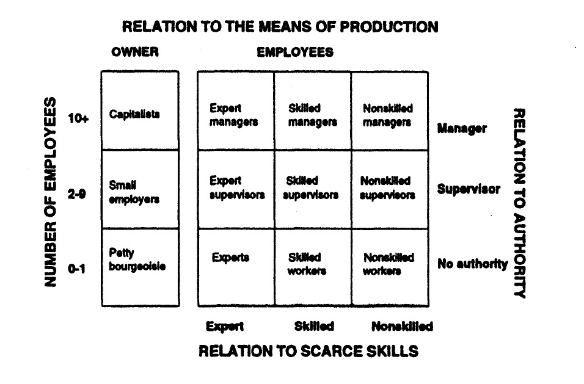

data <- readRDS("input/data/data_lbl.rds")
# sjlabelled::get_label(data)1 Procesamiento Data Conclat Chile
Procesamiento de Data Conclat Chile actualizada para el 08/10/2025.
1.1 Preparación
1.1.1 Cargar datos
1.2 Procesamiento
1.2.1 relation_mop
# Situación empleo
data <- data %>%
mutate(
a07 = factor(
as.numeric(a07),
levels = 1:9,
labels = c(
"1. Patrón(a) o empleador(a)",
"2. Trabajador(a) por cuenta propia",
"3. Empleado(a) u obrero(a) del sector público (Gobierno Central o Municipal)",
"4. Empleado(a) u obrero(a) de empresas públicas",
"5. Empleado(a) u obrero(a) del sector privado",
"6. Servicio doméstico puertas adentro",
"7. Servicio doméstico puertas afuera",
"8. FF.AA. y del Orden",
"9. Familiar no remunerado"
)
)
) %>%
set_variable_labels(a07 = "Employment situation")
frq(data$a07)Employment situation (x) <categorical>
# total N=3048 valid N=3048 mean=3.79 sd=1.67
Value
----------------------------------------------------------------------------
1. Patrón(a) o empleador(a)
2. Trabajador(a) por cuenta propia
3. Empleado(a) u obrero(a) del sector público (Gobierno Central o Municipal)
4. Empleado(a) u obrero(a) de empresas públicas
5. Empleado(a) u obrero(a) del sector privado
6. Servicio doméstico puertas adentro
7. Servicio doméstico puertas afuera
8. FF.AA. y del Orden
9. Familiar no remunerado
<NA>
N | Raw % | Valid % | Cum. %
-------------------------------
345 | 11.32 | 11.32 | 11.32
598 | 19.62 | 19.62 | 30.94
251 | 8.23 | 8.23 | 39.17
337 | 11.06 | 11.06 | 50.23
1370 | 44.95 | 44.95 | 95.18
21 | 0.69 | 0.69 | 95.87
101 | 3.31 | 3.31 | 99.18
13 | 0.43 | 0.43 | 99.61
12 | 0.39 | 0.39 | 100.00
0 | 0.00 | <NA> | <NA>data <- data %>%
mutate(
relation_mop = case_when(
as_numeric(a07) == 1 ~ 1,
as_numeric(a07) == 2 ~ 2,
as_numeric(a07) >= 3 ~ 3,
TRUE ~ NA_real_
),
relation_mop = factor(
relation_mop,
levels = 1:3,
labels = c(
"1. Employers",
"2. Self-Employed",
"3. Salaried"
)
)
) %>%
set_variable_labels(relation_mop = "Relation with Means of Production")
frq(data$relation_mop)Relation with Means of Production (x) <categorical>
# total N=3048 valid N=3048 mean=2.58 sd=0.69
Value | N | Raw % | Valid % | Cum. %
--------------------------------------------------
1. Employers | 345 | 11.32 | 11.32 | 11.32
2. Self-Employed | 598 | 19.62 | 19.62 | 30.94
3. Salaried | 2105 | 69.06 | 69.06 | 100.00
<NA> | 0 | 0.00 | <NA> | <NA>1.2.2 company_size
frq(data$a26)Tamaño de la empresa en Chile (x) <numeric>
# total N=3048 valid N=3048 mean=-73.62 sd=251.41
Value | N | Raw % | Valid % | Cum. %
--------------------------------------
-999 | 8 | 0.26 | 0.26 | 0.26
-888 | 255 | 8.37 | 8.37 | 8.63
1 | 783 | 25.69 | 25.69 | 34.32
2 | 486 | 15.94 | 15.94 | 50.26
3 | 277 | 9.09 | 9.09 | 59.35
4 | 316 | 10.37 | 10.37 | 69.72
5 | 291 | 9.55 | 9.55 | 79.27
6 | 183 | 6.00 | 6.00 | 85.27
7 | 150 | 4.92 | 4.92 | 90.19
8 | 113 | 3.71 | 3.71 | 93.90
9 | 186 | 6.10 | 6.10 | 100.00
<NA> | 0 | 0.00 | <NA> | <NA>data <- data %>%
mutate(
company_size = case_when(
a26 %in% c(1) ~ 1,
a26 %in% c(2, 3) ~ 2,
a26 %in% c(4, 5) ~ 3,
a26 %in% c(6, 7) ~ 4,
a26 %in% c(8, 9) ~ 5,
TRUE ~ NA_real_
),
company_size = factor(
company_size,
levels = 1:5,
labels = c(
"Solo",
"2-9",
"10-49",
"50-199",
"200 or more"),
ordered = TRUE
)
) %>%
set_variable_labels(company_size = "Company Size")
frq(data$company_size)Company Size (x) <ordinal>
# total N=3048 valid N=2785 mean=2.50 sd=1.30
Value | N | Raw % | Valid % | Cum. %
--------------------------------------------
Solo | 783 | 25.69 | 28.11 | 28.11
2-9 | 763 | 25.03 | 27.40 | 55.51
10-49 | 607 | 19.91 | 21.80 | 77.31
50-199 | 333 | 10.93 | 11.96 | 89.26
200 or more | 299 | 9.81 | 10.74 | 100.00
<NA> | 263 | 8.63 | <NA> | <NA>1.2.3 workplace_size
frq(data$a27)Tamaño del local de la empresa (x) <numeric>
# total N=3048 valid N=3048 mean=-15.76 sd=129.92
Value | N | Raw % | Valid % | Cum. %
--------------------------------------
-999 | 8 | 0.26 | 0.26 | 0.26
-888 | 56 | 1.84 | 1.84 | 2.10
1 | 851 | 27.92 | 27.92 | 30.02
2 | 590 | 19.36 | 19.36 | 49.38
3 | 353 | 11.58 | 11.58 | 60.96
4 | 358 | 11.75 | 11.75 | 72.70
5 | 341 | 11.19 | 11.19 | 83.89
6 | 198 | 6.50 | 6.50 | 90.39
7 | 154 | 5.05 | 5.05 | 95.44
8 | 71 | 2.33 | 2.33 | 97.77
9 | 68 | 2.23 | 2.23 | 100.00
<NA> | 0 | 0.00 | <NA> | <NA>data <- data %>%
mutate(
workplace_size = case_when(
a27 %in% c(1) ~ 1,
a27 %in% c(2, 3) ~ 2,
a27 %in% c(4, 5) ~ 3,
a27 %in% c(6, 7) ~ 4,
a27 %in% c(8, 9) ~ 5,
TRUE ~ NA_real_
),
workplace_size = factor(
workplace_size,
levels = 1:5,
labels = c(
"Solo",
"2-9",
"10-49",
"50-199",
"200 or more"),
ordered = TRUE
)
) %>%
set_variable_labels(workplace_size = "Workplace Size")
frq(data$workplace_size)Workplace Size (x) <ordinal>
# total N=3048 valid N=2984 mean=2.32 sd=1.14
Value | N | Raw % | Valid % | Cum. %
--------------------------------------------
Solo | 851 | 27.92 | 28.52 | 28.52
2-9 | 943 | 30.94 | 31.60 | 60.12
10-49 | 699 | 22.93 | 23.42 | 83.55
50-199 | 352 | 11.55 | 11.80 | 95.34
200 or more | 139 | 4.56 | 4.66 | 100.00
<NA> | 64 | 2.10 | <NA> | <NA>1.2.4 owners
- 1 == employers o self employed sin empleados
- 2 == employers o self employed con 2-9 empleados
- 3 == employers o self employed com >= 10 empleados
data <- data %>%
mutate(
owners = case_when(
as.numeric(relation_mop) %in% c(1:2) & (as.numeric(company_size) == 1 | (is.na(company_size) & as.numeric(workplace_size) == 1)) ~ 1,
as.numeric(relation_mop) %in% c(1:2) & (as.numeric(company_size) == 2 | (is.na(company_size) & as.numeric(workplace_size) == 2)) ~ 2,
as.numeric(relation_mop) %in% c(1:2) & (as.numeric(company_size) >= 3 | (is.na(company_size) & as.numeric(workplace_size) >= 3)) ~ 3,
TRUE ~ NA_real_
),
owners = factor(
owners,
levels = 1:3,
labels = c(
"1. Solo Self-Employed",
"2. Small employers",
"3. Employers"
)
)
) %>%
set_variable_labels(owners = "Owners")
frq(data$owners)Owners (x) <categorical>
# total N=3048 valid N=935 mean=1.53 sd=0.69
Value | N | Raw % | Valid % | Cum. %
-------------------------------------------------------
1. Solo Self-Employed | 551 | 18.08 | 58.93 | 58.93
2. Small employers | 276 | 9.06 | 29.52 | 88.45
3. Employers | 108 | 3.54 | 11.55 | 100.00
<NA> | 2113 | 69.32 | <NA> | <NA>1.2.5 owners2
- 1 == employers o self employed sin empleados
- 2 == employers o self employed con 2-49 empleados
- 3 == employers o self employed com >= 50 empleados
data <- data %>%
mutate(
owners2 = case_when(
as.numeric(relation_mop) %in% c(1:2) & (as.numeric(company_size) == 1 | (is.na(company_size) & as.numeric(workplace_size) == 1)) ~ 1,
as.numeric(relation_mop) %in% c(1:2) & (as.numeric(company_size) %in% c(2:3) | (is.na(company_size) & as.numeric(workplace_size) %in% c(2:3))) ~ 2,
as.numeric(relation_mop) %in% c(1:2) & (as.numeric(company_size) >= 4 | (is.na(company_size) & as.numeric(workplace_size) >= 4)) ~ 3,
TRUE ~ NA_real_
),
owners2 = factor(
owners2,
levels = 1:3,
labels = c(
"1. Solo Self-Employed",
"2. Small employers",
"3. Capitalists"
)
)
) %>%
set_variable_labels(owners2 = "Owners 2")
frq(data$owners2)Owners 2 (x) <categorical>
# total N=3048 valid N=935 mean=1.45 sd=0.57
Value | N | Raw % | Valid % | Cum. %
-------------------------------------------------------
1. Solo Self-Employed | 551 | 18.08 | 58.93 | 58.93
2. Small employers | 348 | 11.42 | 37.22 | 96.15
3. Capitalists | 36 | 1.18 | 3.85 | 100.00
<NA> | 2113 | 69.32 | <NA> | <NA>1.2.6 educ
frq(data$e05)Nivel educativo alcanzado (x) <numeric>
# total N=3048 valid N=3048 mean=-2.37 sd=88.97
Value | N | Raw % | Valid % | Cum. %
---------------------------------------
-999 | 13 | 0.43 | 0.43 | 0.43
-888 | 14 | 0.46 | 0.46 | 0.89
1 | 28 | 0.92 | 0.92 | 1.80
2 | 95 | 3.12 | 3.12 | 4.92
3 | 215 | 7.05 | 7.05 | 11.98
4 | 201 | 6.59 | 6.59 | 18.57
5 | 1062 | 34.84 | 34.84 | 53.41
6 | 178 | 5.84 | 5.84 | 59.25
7 | 440 | 14.44 | 14.44 | 73.69
8 | 205 | 6.73 | 6.73 | 80.41
9 | 531 | 17.42 | 17.42 | 97.83
10 | 66 | 2.17 | 2.17 | 100.00
<NA> | 0 | 0.00 | <NA> | <NA>data <- data %>%
mutate(
educ = ifelse(e05 %in% c(-999, -888), NA, e05)
) %>%
set_variable_labels(educ = "Educational level")
frq(data$educ)Educational level (x) <numeric>
# total N=3048 valid N=3021 mean=6.03 sd=2.08
Value | N | Raw % | Valid % | Cum. %
---------------------------------------
1 | 28 | 0.92 | 0.93 | 0.93
2 | 95 | 3.12 | 3.14 | 4.07
3 | 215 | 7.05 | 7.12 | 11.19
4 | 201 | 6.59 | 6.65 | 17.84
5 | 1062 | 34.84 | 35.15 | 53.00
6 | 178 | 5.84 | 5.89 | 58.89
7 | 440 | 14.44 | 14.56 | 73.45
8 | 205 | 6.73 | 6.79 | 80.24
9 | 531 | 17.42 | 17.58 | 97.82
10 | 66 | 2.17 | 2.18 | 100.00
<NA> | 27 | 0.89 | <NA> | <NA>1.2.7 ciuo08
frq(data$ciuo08_ine)CIUO08CL del/a entrevistado/a (INE) (2 dígitos) (x) <character>
# total N=3048 valid N=3048 mean=54.28 sd=23.33
Value | N | Raw % | Valid % | Cum. %
--------------------------------------
12 | 14 | 0.46 | 0.46 | 0.46
13 | 30 | 0.98 | 0.98 | 1.44
14 | 17 | 0.56 | 0.56 | 2.00
21 | 65 | 2.13 | 2.13 | 4.13
22 | 146 | 4.79 | 4.79 | 8.92
23 | 137 | 4.49 | 4.49 | 13.42
24 | 42 | 1.38 | 1.38 | 14.80
25 | 13 | 0.43 | 0.43 | 15.22
26 | 101 | 3.31 | 3.31 | 18.54
31 | 54 | 1.77 | 1.77 | 20.31
32 | 83 | 2.72 | 2.72 | 23.03
33 | 90 | 2.95 | 2.95 | 25.98
34 | 29 | 0.95 | 0.95 | 26.94
35 | 8 | 0.26 | 0.26 | 27.20
36 | 27 | 0.89 | 0.89 | 28.08
41 | 63 | 2.07 | 2.07 | 30.15
42 | 35 | 1.15 | 1.15 | 31.30
43 | 50 | 1.64 | 1.64 | 32.94
44 | 14 | 0.46 | 0.46 | 33.40
51 | 235 | 7.71 | 7.71 | 41.11
52 | 556 | 18.24 | 18.24 | 59.35
53 | 70 | 2.30 | 2.30 | 61.65
54 | 146 | 4.79 | 4.79 | 66.44
61 | 50 | 1.64 | 1.64 | 68.08
62 | 12 | 0.39 | 0.39 | 68.47
71 | 91 | 2.99 | 2.99 | 71.46
72 | 104 | 3.41 | 3.41 | 74.87
73 | 19 | 0.62 | 0.62 | 75.49
74 | 28 | 0.92 | 0.92 | 76.41
75 | 75 | 2.46 | 2.46 | 78.87
81 | 32 | 1.05 | 1.05 | 79.92
83 | 191 | 6.27 | 6.27 | 86.19
91 | 187 | 6.14 | 6.14 | 92.32
92 | 47 | 1.54 | 1.54 | 93.86
93 | 126 | 4.13 | 4.13 | 98.00
94 | 23 | 0.75 | 0.75 | 98.75
95 | 12 | 0.39 | 0.39 | 99.15
96 | 26 | 0.85 | 0.85 | 100.00
<NA> | 0 | 0.00 | <NA> | <NA>1.2.8 skills
Experts -> ciuo08_2d == 11 a 34 con universitaria completa o más (educ >= 9) —> experts
Skilled -> ciuo08_2d == 11 a 34 con universitaria incompleta o menos (educ < 9), y
Skilled -> ciuo08_2d == 35,36,41:44,53, y
Skilled -> ciuo08_2d == 51,54,61,62,71:75,81 con media completa o más (educ >= 5).
Unskilled -> ciuo08_2d == 51,54,61,62,71:75,81 con media incompleta o menos, y
Unskilled -> ciuo08_2d == 52,63,82,83,90+
61 62 71:75 –> skilled
51,54,81 –> unskilled
data <- data %>%
mutate(
skills = case_when(
ciuo08_ine <= 34 & educ >= 9 ~ 1,
ciuo08_ine <= 34 & is.na(educ)~ 1,
ciuo08_ine <= 34 & educ < 9 ~ 2,
ciuo08_ine %in% c(35, 36, 41:44, 53) ~ 2,
ciuo08_ine %in% c(51, 54, 61, 62, 71:75, 81) & educ >= 5 ~ 2,
ciuo08_ine %in% c(61, 62, 71:75) & is.na(educ) ~ 2,
ciuo08_ine %in% c(51, 54, 61, 62, 71:75, 81) & educ <= 4 ~ 3,
ciuo08_ine %in% c(52, 63, 82, 83, 91:99) ~ 3,
ciuo08_ine %in% c(51, 54, 81) & is.na(educ) ~ 3
),
skills = factor(
skills,
levels = 1:3,
labels = c(
"1. Experts",
"2. Skilled",
"3. Unskilled"
)
)
) %>%
set_variable_labels(skills = "Skills")
frq(data$skills)Skills (x) <categorical>
# total N=3048 valid N=3048 mean=2.29 sd=0.72
Value | N | Raw % | Valid % | Cum. %
----------------------------------------------
1. Experts | 469 | 15.39 | 15.39 | 15.39
2. Skilled | 1222 | 40.09 | 40.09 | 55.48
3. Unskilled | 1357 | 44.52 | 44.52 | 100.00
<NA> | 0 | 0.00 | <NA> | <NA>1.2.9 formal_position_auth
frq(data$a15)Posición de autoridad formal (x) <numeric>
# total N=3048 valid N=2107 mean=3.76 sd=0.63
Value | N | Raw % | Valid % | Cum. %
---------------------------------------
1 | 41 | 1.35 | 1.95 | 1.95
2 | 102 | 3.35 | 4.84 | 6.79
3 | 188 | 6.17 | 8.92 | 15.71
4 | 1776 | 58.27 | 84.29 | 100.00
<NA> | 941 | 30.87 | <NA> | <NA>data <- data %>%
mutate(
formal_position_auth = case_when(
as.numeric(relation_mop) %in% c(1, 2) ~ NA_real_,
TRUE ~ as.numeric(a15)
),
formal_position_auth = factor(
formal_position_auth,
levels = 1:4,
labels = c(
"1. Senior manager or executive",
"2. Middle manager (e.g., sector, office or branch head)",
"3. Supervisor or foreperson",
"4. Regular employee or worker (no supervisory role)"
)
)
) %>%
set_variable_labels(formal_position_auth = "Formal position of authority (a15)")
frq(data$formal_position_auth)Formal position of authority (a15) (x) <categorical>
# total N=3048 valid N=2105 mean=3.76 sd=0.63
Value | N | Raw %
----------------------------------------------------------------------
1. Senior manager or executive | 41 | 1.35
2. Middle manager (e.g., sector, office or branch head) | 102 | 3.35
3. Supervisor or foreperson | 188 | 6.17
4. Regular employee or worker (no supervisory role) | 1774 | 58.20
<NA> | 943 | 30.94
Value | Valid % | Cum. %
--------------------------------------------------------------------------
1. Senior manager or executive | 1.95 | 1.95
2. Middle manager (e.g., sector, office or branch head) | 4.85 | 6.79
3. Supervisor or foreperson | 8.93 | 15.72
4. Regular employee or worker (no supervisory role) | 84.28 | 100.00
<NA> | <NA> | <NA>1.2.10 supervision
frq(data$a16)Supervisa a trabajadores/as (x) <numeric>
# total N=3048 valid N=2105 mean=-12.08 sd=112.46
Value | N | Raw % | Valid % | Cum. %
---------------------------------------
-999 | 8 | 0.26 | 0.38 | 0.38
-888 | 24 | 0.79 | 1.14 | 1.52
1 | 280 | 9.19 | 13.30 | 14.82
2 | 1793 | 58.83 | 85.18 | 100.00
<NA> | 943 | 30.94 | <NA> | <NA>data <- data %>%
mutate(
supervision = case_when(
a16 == 1 ~ 1,
a16 %in% c(2, -888, -999) ~ 0,
TRUE ~ NA_real_
)
) %>%
set_variable_labels(supervision = "Supervises other workers (a16)") %>%
set_value_labels(supervision = c(
"Yes" = 1,
"No" = 0
))
frq(data$supervision)Supervises other workers (a16) (x) <numeric>
# total N=3048 valid N=2105 mean=0.13 sd=0.34
Value | Label | N | Raw % | Valid % | Cum. %
-----------------------------------------------
0 | No | 1825 | 59.88 | 86.70 | 86.70
1 | Yes | 280 | 9.19 | 13.30 | 100.00
<NA> | <NA> | 943 | 30.94 | <NA> | <NA>1.2.11 decisionmaking_typology
frq(data$a17_01)Nivel de influencia para: Sancionar a un/a empleado/a (x) <numeric>
# total N=3048 valid N=2105 mean=-19.16 sd=140.62
Value | N | Raw % | Valid % | Cum. %
---------------------------------------
-999 | 14 | 0.46 | 0.67 | 0.67
-888 | 36 | 1.18 | 1.71 | 2.38
1 | 101 | 3.31 | 4.80 | 7.17
2 | 338 | 11.09 | 16.06 | 23.23
3 | 1616 | 53.02 | 76.77 | 100.00
<NA> | 943 | 30.94 | <NA> | <NA>frq(data$a17_02)Nivel de influencia para: Definir aumento de sueldo para un/a empleado/a (x) <numeric>
# total N=3048 valid N=2105 mean=-16.73 sd=132.62
Value | N | Raw % | Valid % | Cum. %
---------------------------------------
-999 | 10 | 0.33 | 0.48 | 0.48
-888 | 35 | 1.15 | 1.66 | 2.14
1 | 55 | 1.80 | 2.61 | 4.75
2 | 223 | 7.32 | 10.59 | 15.34
3 | 1782 | 58.46 | 84.66 | 100.00
<NA> | 943 | 30.94 | <NA> | <NA>frq(data$a17_03)Nivel de influencia para: Contratar o despedir trabajadores/as (x) <numeric>
# total N=3048 valid N=2105 mean=-12.16 sd=117.04
Value | N | Raw % | Valid % | Cum. %
---------------------------------------
-999 | 11 | 0.36 | 0.52 | 0.52
-888 | 23 | 0.75 | 1.09 | 1.62
1 | 71 | 2.33 | 3.37 | 4.99
2 | 249 | 8.17 | 11.83 | 16.82
3 | 1751 | 57.45 | 83.18 | 100.00
<NA> | 943 | 30.94 | <NA> | <NA>frq(data$a17_04)Nivel de influencia para: Cambiar bienes o servicios de la empresa (x) <numeric>
# total N=3048 valid N=2105 mean=-12.57 sd=118.59
Value | N | Raw % | Valid % | Cum. %
---------------------------------------
-999 | 11 | 0.36 | 0.52 | 0.52
-888 | 24 | 0.79 | 1.14 | 1.66
1 | 56 | 1.84 | 2.66 | 4.32
2 | 259 | 8.50 | 12.30 | 16.63
3 | 1755 | 57.58 | 83.37 | 100.00
<NA> | 943 | 30.94 | <NA> | <NA>frq(data$a17_05)Nivel de influencia para: Proponer cambios en forma de organizazr el trabajo (x) <numeric>
# total N=3048 valid N=2105 mean=-9.96 sd=107.12
Value | N | Raw % | Valid % | Cum. %
---------------------------------------
-999 | 7 | 0.23 | 0.33 | 0.33
-888 | 22 | 0.72 | 1.05 | 1.38
1 | 120 | 3.94 | 5.70 | 7.08
2 | 418 | 13.71 | 19.86 | 26.94
3 | 1538 | 50.46 | 73.06 | 100.00
<NA> | 943 | 30.94 | <NA> | <NA>frq(data$a17_06)Nivel de influencia para: Incidir en cómo se gasta el presupuesto (x) <numeric>
# total N=3048 valid N=2105 mean=-20.39 sd=143.27
Value | N | Raw % | Valid % | Cum. %
---------------------------------------
-999 | 7 | 0.23 | 0.33 | 0.33
-888 | 47 | 1.54 | 2.23 | 2.57
1 | 63 | 2.07 | 2.99 | 5.56
2 | 211 | 6.92 | 10.02 | 15.58
3 | 1777 | 58.30 | 84.42 | 100.00
<NA> | 943 | 30.94 | <NA> | <NA>data <- data %>%
mutate(
decisionmaking_typology = if_else(
is.na(a17_01),
NA_real_,
rowSums(across(a17_01:a17_06, ~ case_when(
.x == 1 ~ 3,
.x == 2 ~ 2,
.x == 3 ~ 1,
.x %in% c(-888, -999) ~ 1,
TRUE ~ NA_real_
)), na.rm = TRUE)
),
decisionmaking_typology_mean = if_else(
is.na(a17_01),
NA_real_,
rowMeans(across(a17_01:a17_06, ~ case_when(
.x == 1 ~ 3,
.x == 2 ~ 2,
.x == 3 ~ 1,
.x %in% c(-888, -999) ~ 1,
TRUE ~ NA_real_
)), na.rm = TRUE)
)
) %>%
set_variable_labels(
decisionmaking_typology = "Decision-making typology (sum, inverted)",
decisionmaking_typology_mean = "Decision-making typology (mean, inverted)"
)
frq(data$decisionmaking_typology)Decision-making typology (sum, inverted) (x) <numeric>
# total N=3048 valid N=2105 mean=7.25 sd=2.38
Value | N | Raw % | Valid % | Cum. %
---------------------------------------
6 | 1363 | 44.72 | 64.75 | 64.75
7 | 228 | 7.48 | 10.83 | 75.58
8 | 139 | 4.56 | 6.60 | 82.19
9 | 79 | 2.59 | 3.75 | 85.94
10 | 67 | 2.20 | 3.18 | 89.12
11 | 61 | 2.00 | 2.90 | 92.02
12 | 78 | 2.56 | 3.71 | 95.72
13 | 27 | 0.89 | 1.28 | 97.01
14 | 11 | 0.36 | 0.52 | 97.53
15 | 10 | 0.33 | 0.48 | 98.00
16 | 10 | 0.33 | 0.48 | 98.48
17 | 5 | 0.16 | 0.24 | 98.72
18 | 27 | 0.89 | 1.28 | 100.00
<NA> | 943 | 30.94 | <NA> | <NA>frq(data$decisionmaking_typology_mean)Decision-making typology (mean, inverted) (x) <numeric>
# total N=3048 valid N=2105 mean=1.21 sd=0.40
Value | N | Raw % | Valid % | Cum. %
---------------------------------------
1.00 | 1363 | 44.72 | 64.75 | 64.75
1.17 | 228 | 7.48 | 10.83 | 75.58
1.33 | 139 | 4.56 | 6.60 | 82.19
1.50 | 79 | 2.59 | 3.75 | 85.94
1.67 | 67 | 2.20 | 3.18 | 89.12
1.83 | 61 | 2.00 | 2.90 | 92.02
2.00 | 78 | 2.56 | 3.71 | 95.72
2.17 | 27 | 0.89 | 1.28 | 97.01
2.33 | 11 | 0.36 | 0.52 | 97.53
2.50 | 10 | 0.33 | 0.48 | 98.00
2.67 | 10 | 0.33 | 0.48 | 98.48
2.83 | 5 | 0.16 | 0.24 | 98.72
3.00 | 27 | 0.89 | 1.28 | 100.00
<NA> | 943 | 30.94 | <NA> | <NA># Crear variable con 3 categorías
data <- data %>%
mutate(
decisionmaking_typology_cat = case_when(
decisionmaking_typology_mean == 1 ~ 1,
decisionmaking_typology_mean > 1 & decisionmaking_typology_mean < 3 ~ 2,
decisionmaking_typology_mean == 3 ~ 3
),
decisionmaking_typology_cat = factor(
decisionmaking_typology_cat,
levels = 1:3
)
) %>%
set_variable_labels(
decisionmaking_typology_cat = "Decision-making typology (recoded 3 categories)"
)
frq(data$decisionmaking_typology_cat)Decision-making typology (recoded 3 categories) (x) <categorical>
# total N=3048 valid N=2105 mean=1.37 sd=0.51
Value | N | Raw % | Valid % | Cum. %
---------------------------------------
1 | 1363 | 44.72 | 64.75 | 64.75
2 | 715 | 23.46 | 33.97 | 98.72
3 | 27 | 0.89 | 1.28 | 100.00
<NA> | 943 | 30.94 | <NA> | <NA>1.2.12 managerial_location_typology
data <- data %>%
mutate(
managerial_location_typology = case_when(
as.integer(decisionmaking_typology_cat) == 3 & supervision == 1 & as.integer(formal_position_auth) %in% 1:3 ~ 1,
as.integer(decisionmaking_typology_cat) == 3 & supervision == 1 & as.integer(formal_position_auth) == 4 ~ 2,
as.integer(decisionmaking_typology_cat) == 3 & supervision == 0 & as.integer(formal_position_auth) %in% 1:3 ~ 3,
as.integer(decisionmaking_typology_cat) == 3 & supervision == 0 & as.integer(formal_position_auth) == 4 ~ 4,
as.integer(decisionmaking_typology_cat) == 2 & supervision == 1 & as.integer(formal_position_auth) %in% 1:3 ~ 5,
as.integer(decisionmaking_typology_cat) == 2 & supervision == 1 & as.integer(formal_position_auth) == 4 ~ 6,
as.integer(decisionmaking_typology_cat) == 2 & supervision == 0 & as.integer(formal_position_auth) %in% 1:3 ~ 7,
as.integer(decisionmaking_typology_cat) == 2 & supervision == 0 & as.integer(formal_position_auth) == 4 ~ 8,
as.integer(decisionmaking_typology_cat) == 1 & supervision == 1 & as.integer(formal_position_auth) %in% 1:3 ~ 9,
as.integer(decisionmaking_typology_cat) == 1 & supervision == 1 & as.integer(formal_position_auth) == 4 ~ 10,
as.integer(decisionmaking_typology_cat) == 1 & supervision == 0 & as.integer(formal_position_auth) %in% 1:3 ~ 11,
as.integer(decisionmaking_typology_cat) == 1 & supervision == 0 & as.integer(formal_position_auth) == 4 ~ 12
),
managerial_location_typology = factor(
managerial_location_typology,
levels = 1:12,
labels = c(
"1. Manager on all criteria",
"2. Manager not in formal hierarchy",
"3. Non-supervisory manager",
"4. Non-supervisory decision-maker not in formal hierarchy",
"5. Advisor-manager on all criteria",
"6. Advisor not in hierarchy",
"7. Non-supervisory advisor",
"8. Non-supervisory advisor not in formal hierarchy",
"9. Sanctioning / task supervisor in hierarchy",
"10. Sanctioning / task supervisor not in hierarchy",
"11. Not subordinates but in hierarchy",
"12. Non-supervisor / non manager on all criteria"
)
)
) %>%
set_variable_labels(managerial_location_typology = "Managerial Location Typology")
frq(data$managerial_location_typology)Managerial Location Typology (x) <categorical>
# total N=3048 valid N=2105 mean=10.12 sd=2.66
Value | N | Raw %
------------------------------------------------------------------------
1. Manager on all criteria | 18 | 0.59
2. Manager not in formal hierarchy | 4 | 0.13
3. Non-supervisory manager | 4 | 0.13
4. Non-supervisory decision-maker not in formal hierarchy | 1 | 0.03
5. Advisor-manager on all criteria | 174 | 5.71
6. Advisor not in hierarchy | 67 | 2.20
7. Non-supervisory advisor | 86 | 2.82
8. Non-supervisory advisor not in formal hierarchy | 388 | 12.73
9. Sanctioning / task supervisor in hierarchy | 7 | 0.23
10. Sanctioning / task supervisor not in hierarchy | 10 | 0.33
11. Not subordinates but in hierarchy | 42 | 1.38
12. Non-supervisor / non manager on all criteria | 1304 | 42.78
<NA> | 943 | 30.94
Value | Valid % | Cum. %
----------------------------------------------------------------------------
1. Manager on all criteria | 0.86 | 0.86
2. Manager not in formal hierarchy | 0.19 | 1.05
3. Non-supervisory manager | 0.19 | 1.24
4. Non-supervisory decision-maker not in formal hierarchy | 0.05 | 1.28
5. Advisor-manager on all criteria | 8.27 | 9.55
6. Advisor not in hierarchy | 3.18 | 12.73
7. Non-supervisory advisor | 4.09 | 16.82
8. Non-supervisory advisor not in formal hierarchy | 18.43 | 35.25
9. Sanctioning / task supervisor in hierarchy | 0.33 | 35.58
10. Sanctioning / task supervisor not in hierarchy | 0.48 | 36.06
11. Not subordinates but in hierarchy | 2.00 | 38.05
12. Non-supervisor / non manager on all criteria | 61.95 | 100.00
<NA> | <NA> | <NA>1.2.13 organization_assets
data <- data %>%
mutate(
organization_assets = case_when(
as.integer(managerial_location_typology) %in% c(1, 2, 3, 5) ~ 1,
as.integer(managerial_location_typology) %in% c(6, 7, 9, 10) ~ 2,
as.integer(managerial_location_typology) %in% c(4, 8, 11, 12) ~ 3
),
organization_assets = factor(
organization_assets,
levels = 1:3,
labels = c(
"1. Manager",
"2. Supervisor",
"3. Non-managerial worker"
)
)
) %>%
set_variable_labels(organization_assets = "Organizational Assets")
frq(data$organization_assets)Organizational Assets (x) <categorical>
# total N=3048 valid N=2105 mean=2.73 sd=0.62
Value | N | Raw % | Valid % | Cum. %
----------------------------------------------------------
1. Manager | 200 | 6.56 | 9.50 | 9.50
2. Supervisor | 170 | 5.58 | 8.08 | 17.58
3. Non-managerial worker | 1735 | 56.92 | 82.42 | 100.00
<NA> | 943 | 30.94 | <NA> | <NA>1.2.14 a06_boleta
frq(data$a06)Boleta o factura (x) <numeric>
# total N=3048 valid N=3048 mean=-11.58 sd=113.10
Value | N | Raw % | Valid % | Cum. %
---------------------------------------
-999 | 11 | 0.36 | 0.36 | 0.36
-888 | 36 | 1.18 | 1.18 | 1.54
1 | 478 | 15.68 | 15.68 | 17.22
2 | 398 | 13.06 | 13.06 | 30.28
3 | 2125 | 69.72 | 69.72 | 100.00
<NA> | 0 | 0.00 | <NA> | <NA>data <- data %>%
mutate(
a06_boleta = case_when(
a06 %in% c(1, 2) ~ 1,
a06 %in% c(3, -888, -999) ~ 0
)) %>%
set_variable_labels(a06_boleta = "Entrega boleta (1 = yes)") %>%
set_value_labels(a06_boleta = c(
"Yes" = 1,
"No" = 0
))
frq(data$a06_boleta)Entrega boleta (1 = yes) (x) <numeric>
# total N=3048 valid N=3048 mean=0.29 sd=0.45
Value | Label | N | Raw % | Valid % | Cum. %
-----------------------------------------------
0 | No | 2172 | 71.26 | 71.26 | 71.26
1 | Yes | 876 | 28.74 | 28.74 | 100.00
<NA> | <NA> | 0 | 0.00 | <NA> | <NA>1.2.15 inicio_actividades
frq(data$a10)Iniciación de actividades (x) <numeric>
# total N=3048 valid N=944 mean=3.14 sd=1.72
Value | N | Raw % | Valid % | Cum. %
---------------------------------------
1 | 254 | 8.33 | 26.91 | 26.91
2 | 192 | 6.30 | 20.34 | 47.25
3 | 63 | 2.07 | 6.67 | 53.92
4 | 42 | 1.38 | 4.45 | 58.37
5 | 393 | 12.89 | 41.63 | 100.00
<NA> | 2104 | 69.03 | <NA> | <NA>table(data$a10, data$relation_mop)
1. Employers 2. Self-Employed 3. Salaried
1 143 111 0
2 63 129 0
3 40 23 0
4 19 23 0
5 79 312 2table(data$a10, data$owners)
1. Solo Self-Employed 2. Small employers 3. Employers
1 131 79 43
2 90 87 14
3 16 33 13
4 16 12 13
5 298 65 24table(data$a10, data$owners2)
1. Solo Self-Employed 2. Small employers 3. Capitalists
1 131 111 11
2 90 95 6
3 16 42 4
4 16 20 5
5 298 79 101.2.16 a18_contrato
frq(data$a18)Contrato de trabajo escrito (x) <numeric>
# total N=3048 valid N=2105 mean=-13.86 sd=122.43
Value | N | Raw % | Valid % | Cum. %
---------------------------------------
-999 | 32 | 1.05 | 1.52 | 1.52
1 | 1691 | 55.48 | 80.33 | 81.85
2 | 76 | 2.49 | 3.61 | 85.46
3 | 272 | 8.92 | 12.92 | 98.38
4 | 34 | 1.12 | 1.62 | 100.00
<NA> | 943 | 30.94 | <NA> | <NA>data <- data %>%
mutate(
a18_contrato = case_when(
a18 == 1 ~ 1,
a18 %in% c(2, 3, 4, -999) ~ 0
)
) %>%
set_variable_labels(a18_contrato = "Has a signed written employment contract (1 = yes)") %>%
set_value_labels(a18_contrato = c(
"Yes" = 1,
"No" = 0
))
frq(data$a18_contrato)Has a signed written employment contract (1 = yes) (x) <numeric>
# total N=3048 valid N=2105 mean=0.80 sd=0.40
Value | Label | N | Raw % | Valid % | Cum. %
-----------------------------------------------
0 | No | 414 | 13.58 | 19.67 | 19.67
1 | Yes | 1691 | 55.48 | 80.33 | 100.00
<NA> | <NA> | 943 | 30.94 | <NA> | <NA>1.3 Classes

1.3.1 wrightclass1_original
employers: employers con 10 o más trabajadores
data <- data %>%
mutate(
wrightclass1_original = case_when(
as.integer(owners) == 3 ~ 1, # 1. Employers
as.integer(owners) == 2 ~ 2, # 2. Small employers
as.integer(owners) == 1 ~ 3, # 3. Petty bourgeoisie
as.integer(organization_assets) == 1 & as.integer(skills) == 1 ~ 4, # 4. Expert managers
as.integer(organization_assets) == 2 & as.integer(skills) == 1 ~ 5, # 5. Expert supervisors
as.integer(organization_assets) == 3 & as.integer(skills) == 1 ~ 6, # 6. Experts
as.integer(organization_assets) == 1 & as.integer(skills) == 2 ~ 7, # 7. Skilled managers
as.integer(organization_assets) == 2 & as.integer(skills) == 2 ~ 8, # 8. Skilled supervisors
as.integer(organization_assets) == 3 & as.integer(skills) == 2 ~ 9, # 9. Skilled workers
as.integer(organization_assets) == 1 & as.integer(skills) == 3 ~ 10, # 10. Nonskilled managers
as.integer(organization_assets) == 2 & as.integer(skills) == 3 ~ 11, # 11. Nonskilled supervisors
as.integer(organization_assets) == 3 & as.integer(skills) == 3 ~ 12 # 12. Nonskilled workers
),
wrightclass1_original = factor(
wrightclass1_original,
levels = 1:12,
labels = c(
"1. Employers",
"2. Small employers",
"3. Petty bourgeoisie",
"4. Expert managers",
"5. Expert supervisors",
"6. Experts",
"7. Skilled managers",
"8. Skilled supervisors",
"9. Skilled workers",
"10. Nonskilled managers",
"11. Nonskilled supervisors",
"12. Nonskilled workers"
)
)
) %>%
set_variable_labels(wrightclass1_original = "Wright Class Typology")
frq(data$wrightclass1_original)Wright Class Typology (x) <categorical>
# total N=3048 valid N=3040 mean=7.28 sd=3.82
Value | N | Raw % | Valid % | Cum. %
-----------------------------------------------------------
1. Employers | 108 | 3.54 | 3.55 | 3.55
2. Small employers | 276 | 9.06 | 9.08 | 12.63
3. Petty bourgeoisie | 551 | 18.08 | 18.12 | 30.76
4. Expert managers | 92 | 3.02 | 3.03 | 33.78
5. Expert supervisors | 44 | 1.44 | 1.45 | 35.23
6. Experts | 245 | 8.04 | 8.06 | 43.29
7. Skilled managers | 88 | 2.89 | 2.89 | 46.18
8. Skilled supervisors | 87 | 2.85 | 2.86 | 49.05
9. Skilled workers | 689 | 22.60 | 22.66 | 71.71
10. Nonskilled managers | 20 | 0.66 | 0.66 | 72.37
11. Nonskilled supervisors | 39 | 1.28 | 1.28 | 73.65
12. Nonskilled workers | 801 | 26.28 | 26.35 | 100.00
<NA> | 8 | 0.26 | <NA> | <NA># base survey
data_svy <- as_survey_design(data, weights = rake_wb2)
# Tabla de frecuencias ponderadas
wright_freq <- data_svy %>%
group_by(wrightclass1_original) %>%
summarise(
freq = survey_mean(vartype = NULL, na.rm = TRUE),
n_unweighted = unweighted(n())
) %>%
mutate(
freq_pct = freq * 100
)Warning: There was 1 warning in `dplyr::summarise()`.
ℹ In argument: `freq = survey_mean(vartype = NULL, na.rm = TRUE)`.
ℹ In group 1: `wrightclass1_original = 1. Employers`.
Caused by warning:
! na.rm argument has no effect on survey_mean when calculating grouped proportions.
This warning is displayed once per session.wright_freq %>%
print(n = Inf)# A tibble: 13 × 4
wrightclass1_original freq n_unweighted freq_pct
<fct> <dbl> <int> <dbl>
1 1. Employers 0.0208 108 2.08
2 2. Small employers 0.0686 276 6.86
3 3. Petty bourgeoisie 0.160 551 16.0
4 4. Expert managers 0.0460 92 4.60
5 5. Expert supervisors 0.0104 44 1.04
6 6. Experts 0.123 245 12.3
7 7. Skilled managers 0.0335 88 3.35
8 8. Skilled supervisors 0.0213 87 2.13
9 9. Skilled workers 0.255 689 25.5
10 10. Nonskilled managers 0.00845 20 0.845
11 11. Nonskilled supervisors 0.0206 39 2.06
12 12. Nonskilled workers 0.231 801 23.1
13 <NA> 0.00146 8 0.1461.3.2 wrightclass2_capitalists
capitalists: employers 50 o más trabajadores
data <- data %>%
mutate(
wrightclass2_capitalists = case_when(
as.integer(owners2) == 3 ~ 1, # 1. Capitalists
as.integer(owners2) == 2 ~ 2, # 2. Small employers
as.integer(owners2) == 1 ~ 3, # 3. Petty bourgeoisie
as.integer(organization_assets) == 1 & as.integer(skills) == 1 ~ 4, # 4. Expert managers
as.integer(organization_assets) == 2 & as.integer(skills) == 1 ~ 5, # 5. Expert supervisors
as.integer(organization_assets) == 3 & as.integer(skills) == 1 ~ 6, # 6. Experts
as.integer(organization_assets) == 1 & as.integer(skills) == 2 ~ 7, # 7. Skilled managers
as.integer(organization_assets) == 2 & as.integer(skills) == 2 ~ 8, # 8. Skilled supervisors
as.integer(organization_assets) == 3 & as.integer(skills) == 2 ~ 9, # 9. Skilled workers
as.integer(organization_assets) == 1 & as.integer(skills) == 3 ~ 10, # 10. Nonskilled managers
as.integer(organization_assets) == 2 & as.integer(skills) == 3 ~ 11, # 11. Nonskilled supervisors
as.integer(organization_assets) == 3 & as.integer(skills) == 3 ~ 12 # 12. Nonskilled workers
),
wrightclass2_capitalists = factor(
wrightclass2_capitalists,
levels = 1:12,
labels = c(
"1. Capitalists",
"2. Small employers",
"3. Petty bourgeoisie",
"4. Expert managers",
"5. Expert supervisors",
"6. Experts",
"7. Skilled managers",
"8. Skilled supervisors",
"9. Skilled workers",
"10. Nonskilled managers",
"11. Nonskilled supervisors",
"12. Nonskilled workers"
)
)
) %>%
set_variable_labels(wrightclass2_capitalists = "Wright Class Typology (2)")
frq(data$wrightclass2_capitalists)Wright Class Typology (2) (x) <categorical>
# total N=3048 valid N=3040 mean=7.30 sd=3.78
Value | N | Raw % | Valid % | Cum. %
-----------------------------------------------------------
1. Capitalists | 36 | 1.18 | 1.18 | 1.18
2. Small employers | 348 | 11.42 | 11.45 | 12.63
3. Petty bourgeoisie | 551 | 18.08 | 18.12 | 30.76
4. Expert managers | 92 | 3.02 | 3.03 | 33.78
5. Expert supervisors | 44 | 1.44 | 1.45 | 35.23
6. Experts | 245 | 8.04 | 8.06 | 43.29
7. Skilled managers | 88 | 2.89 | 2.89 | 46.18
8. Skilled supervisors | 87 | 2.85 | 2.86 | 49.05
9. Skilled workers | 689 | 22.60 | 22.66 | 71.71
10. Nonskilled managers | 20 | 0.66 | 0.66 | 72.37
11. Nonskilled supervisors | 39 | 1.28 | 1.28 | 73.65
12. Nonskilled workers | 801 | 26.28 | 26.35 | 100.00
<NA> | 8 | 0.26 | <NA> | <NA># base survey
data_svy <- as_survey_design(data, weights = rake_wb2)
# Tabla de frecuencias ponderadas
wright_freq_2 <- data_svy %>%
group_by(wrightclass2_capitalists) %>%
summarise(
freq = survey_mean(vartype = NULL, na.rm = TRUE),
n_unweighted = unweighted(n())
) %>%
mutate(
freq_pct = freq * 100
)
wright_freq_2 %>%
print(n = Inf)# A tibble: 13 × 4
wrightclass2_capitalists freq n_unweighted freq_pct
<fct> <dbl> <int> <dbl>
1 1. Capitalists 0.00950 36 0.950
2 2. Small employers 0.0799 348 7.99
3 3. Petty bourgeoisie 0.160 551 16.0
4 4. Expert managers 0.0460 92 4.60
5 5. Expert supervisors 0.0104 44 1.04
6 6. Experts 0.123 245 12.3
7 7. Skilled managers 0.0335 88 3.35
8 8. Skilled supervisors 0.0213 87 2.13
9 9. Skilled workers 0.255 689 25.5
10 10. Nonskilled managers 0.00845 20 0.845
11 11. Nonskilled supervisors 0.0206 39 2.06
12 12. Nonskilled workers 0.231 801 23.1
13 <NA> 0.00146 8 0.1461.3.3 wrightclass1_informal
data <- data %>%
mutate(
wrightclass1_informal = case_when(
as.integer(owners) == 3 ~ 1, # 1. Employers
as.integer(owners) == 2 ~ 2, # 2. Small employers
as.integer(owners) == 1 & a06_boleta == 1 ~ 3, # 3. Petty bourgeoisie
as.integer(owners) == 1 & a06_boleta == 0 ~ 4, # 4. Informal self-employed
as.integer(organization_assets) == 1 & as.integer(skills) == 1 ~ 5, # 5. Expert managers
as.integer(organization_assets) == 2 & as.integer(skills) == 1 ~ 6, # 6. Expert supervisors
as.integer(organization_assets) == 3 & as.integer(skills) == 1 ~ 7, # 7. Experts
as.integer(organization_assets) == 1 & as.integer(skills) == 2 ~ 8, # 8. Skilled managers
as.integer(organization_assets) == 2 & as.integer(skills) == 2 ~ 9, # 9. skilled supervisors
as.integer(organization_assets) == 1 & as.integer(skills) == 3 ~ 10, # 10. Nonskilled managers
as.integer(organization_assets) == 2 & as.integer(skills) == 3 ~ 11, # 11. Nonskilled supervisors
as.integer(organization_assets) == 3 & as.integer(skills) %in% c(2, 3) & a18_contrato == 1 ~ 12, # 12. Formal workers
as.integer(organization_assets) == 3 & as.integer(skills) %in% c(2, 3) & a18_contrato == 0 ~ 13 # 13. Informal workers
),
wrightclass1_informal = factor(
wrightclass1_informal,
levels = 1:13,
labels = c(
"1. Employers",
"2. Small employers",
"3. Petty bourgeoisie",
"4. Informal self-employed",
"5. Expert managers",
"6. Expert supervisors",
"7. Experts",
"8. Skilled managers",
"9. Skilled supervisors",
"10. Nonskilled managers",
"11. Nonskilled supervisors",
"12. Formal workers",
"13. Informal workers"
)
)
) %>%
set_variable_labels(wrightclass1_informal = "Wright Class Typology + Informal (3)")
frq(data$wrightclass1_informal)Wright Class Typology + Informal (3) (x) <categorical>
# total N=3048 valid N=3040 mean=8.37 sd=4.22
Value | N | Raw % | Valid % | Cum. %
------------------------------------------------------------
1. Employers | 108 | 3.54 | 3.55 | 3.55
2. Small employers | 276 | 9.06 | 9.08 | 12.63
3. Petty bourgeoisie | 196 | 6.43 | 6.45 | 19.08
4. Informal self-employed | 355 | 11.65 | 11.68 | 30.76
5. Expert managers | 92 | 3.02 | 3.03 | 33.78
6. Expert supervisors | 44 | 1.44 | 1.45 | 35.23
7. Experts | 245 | 8.04 | 8.06 | 43.29
8. Skilled managers | 88 | 2.89 | 2.89 | 46.18
9. Skilled supervisors | 87 | 2.85 | 2.86 | 49.05
10. Nonskilled managers | 20 | 0.66 | 0.66 | 49.70
11. Nonskilled supervisors | 39 | 1.28 | 1.28 | 50.99
12. Formal workers | 1150 | 37.73 | 37.83 | 88.82
13. Informal workers | 340 | 11.15 | 11.18 | 100.00
<NA> | 8 | 0.26 | <NA> | <NA># base survey
data_svy <- as_survey_design(data, weights = rake_wb2)
# Tabla de frecuencias ponderadas
wright_freq_3 <- data_svy %>%
group_by(wrightclass1_informal) %>%
summarise(
freq = survey_mean(vartype = NULL, na.rm = TRUE),
n_unweighted = unweighted(n())
) %>%
mutate(
freq_pct = freq * 100
)
wright_freq_3 %>%
print(n = Inf)# A tibble: 14 × 4
wrightclass1_informal freq n_unweighted freq_pct
<fct> <dbl> <int> <dbl>
1 1. Employers 0.0208 108 2.08
2 2. Small employers 0.0686 276 6.86
3 3. Petty bourgeoisie 0.0640 196 6.40
4 4. Informal self-employed 0.0960 355 9.60
5 5. Expert managers 0.0460 92 4.60
6 6. Expert supervisors 0.0104 44 1.04
7 7. Experts 0.123 245 12.3
8 8. Skilled managers 0.0335 88 3.35
9 9. Skilled supervisors 0.0213 87 2.13
10 10. Nonskilled managers 0.00845 20 0.845
11 11. Nonskilled supervisors 0.0206 39 2.06
12 12. Formal workers 0.368 1150 36.8
13 13. Informal workers 0.118 340 11.8
14 <NA> 0.00146 8 0.1461.3.4 wrightclass2_informal
data <- data %>%
mutate(
wrightclass2_informal = case_when(
as.integer(owners2) == 3 ~ 1, # 1. Capitalists
as.integer(owners2) == 2 ~ 2, # 2. Small employers
as.integer(owners2) == 1 & a06_boleta == 1 ~ 3, # 3. Petty bourgeoisie
as.integer(owners2) == 1 & a06_boleta == 0 ~ 4, # 4. Informal self-employed
as.integer(organization_assets) == 1 & as.integer(skills) == 1 ~ 5, # 5. Expert managers
as.integer(organization_assets) == 2 & as.integer(skills) == 1 ~ 6, # 6. Expert supervisors
as.integer(organization_assets) == 3 & as.integer(skills) == 1 ~ 7, # 7. Experts
as.integer(organization_assets) == 1 & as.integer(skills) == 2 ~ 8, # 8. Skilled managers
as.integer(organization_assets) == 2 & as.integer(skills) == 2 ~ 9, # 9. skilled supervisors
as.integer(organization_assets) == 1 & as.integer(skills) == 3 ~ 10, # 10. Nonskilled managers
as.integer(organization_assets) == 2 & as.integer(skills) == 3 ~ 11, # 11. Nonskilled supervisors
as.integer(organization_assets) == 3 & as.integer(skills) %in% c(2, 3) & a18_contrato == 1 ~ 12, # 12. Formal workers
as.integer(organization_assets) == 3 & as.integer(skills) %in% c(2, 3) & a18_contrato == 0 ~ 13 # 13. Informal workers
),
wrightclass2_informal = factor(
wrightclass2_informal,
levels = 1:13,
labels = c(
"1. Capitalists",
"2. Small employers",
"3. Petty bourgeoisie",
"4. Informal self-employed",
"5. Expert managers",
"6. Expert supervisors",
"7. Experts",
"8. Skilled managers",
"9. Skilled supervisors",
"10. Nonskilled managers",
"11. Nonskilled supervisors",
"12. Formal workers",
"13. Informal workers"
)
)
) %>%
set_variable_labels(wrightclass2_informal = "Wright Class Typology + Informal (4)")
frq(data$wrightclass2_informal)Wright Class Typology + Informal (4) (x) <categorical>
# total N=3048 valid N=3040 mean=8.39 sd=4.18
Value | N | Raw % | Valid % | Cum. %
------------------------------------------------------------
1. Capitalists | 36 | 1.18 | 1.18 | 1.18
2. Small employers | 348 | 11.42 | 11.45 | 12.63
3. Petty bourgeoisie | 196 | 6.43 | 6.45 | 19.08
4. Informal self-employed | 355 | 11.65 | 11.68 | 30.76
5. Expert managers | 92 | 3.02 | 3.03 | 33.78
6. Expert supervisors | 44 | 1.44 | 1.45 | 35.23
7. Experts | 245 | 8.04 | 8.06 | 43.29
8. Skilled managers | 88 | 2.89 | 2.89 | 46.18
9. Skilled supervisors | 87 | 2.85 | 2.86 | 49.05
10. Nonskilled managers | 20 | 0.66 | 0.66 | 49.70
11. Nonskilled supervisors | 39 | 1.28 | 1.28 | 50.99
12. Formal workers | 1150 | 37.73 | 37.83 | 88.82
13. Informal workers | 340 | 11.15 | 11.18 | 100.00
<NA> | 8 | 0.26 | <NA> | <NA># base survey
data_svy <- as_survey_design(data, weights = rake_wb2)
# Tabla de frecuencias ponderadas
wright_freq_4 <- data_svy %>%
group_by(wrightclass2_informal) %>%
summarise(
freq = survey_mean(vartype = NULL, na.rm = TRUE),
n_unweighted = unweighted(n())
) %>%
mutate(
freq_pct = freq * 100
)
wright_freq_4 %>%
print(n = Inf)# A tibble: 14 × 4
wrightclass2_informal freq n_unweighted freq_pct
<fct> <dbl> <int> <dbl>
1 1. Capitalists 0.00950 36 0.950
2 2. Small employers 0.0799 348 7.99
3 3. Petty bourgeoisie 0.0640 196 6.40
4 4. Informal self-employed 0.0960 355 9.60
5 5. Expert managers 0.0460 92 4.60
6 6. Expert supervisors 0.0104 44 1.04
7 7. Experts 0.123 245 12.3
8 8. Skilled managers 0.0335 88 3.35
9 9. Skilled supervisors 0.0213 87 2.13
10 10. Nonskilled managers 0.00845 20 0.845
11 11. Nonskilled supervisors 0.0206 39 2.06
12 12. Formal workers 0.368 1150 36.8
13 13. Informal workers 0.118 340 11.8
14 <NA> 0.00146 8 0.1461.3.5 wrightclass1_reduced
data <- data %>%
mutate(
wrightclass1_reduced = case_when(
as.integer(organization_assets) == 3 & as.integer(skills) %in% c(2, 3) & a18_contrato == 1 ~ 1, # 1. Formal workers
as.integer(organization_assets) == 3 & as.integer(skills) %in% c(2, 3) & a18_contrato == 0 ~ 2, # 2. Informal workers
as.integer(owners) == 1 & a06_boleta == 0 ~ 3, # 3. Informal self-employed
as.integer(organization_assets) == 3 & as.integer(skills) == 1 ~ 4, # 4. Experts
as.integer(organization_assets) == 2 & as.integer(skills) %in% c(1, 2, 3) ~ 5, # 5. Supervisors
as.integer(organization_assets) == 1 & as.integer(skills) %in% c(1, 2, 3) ~ 6, # 6. Managers
as.integer(owners) == 1 & a06_boleta == 1 ~ 7, # 7. Petty bourgeoisie
as.integer(owners) == 2 ~ 8, # 8. Small employers
as.integer(owners) == 3 ~ 9 # 9. Employers
),
wrightclass1_reduced = factor(
wrightclass1_reduced,
levels = 1:9,
labels = c(
"1. Formal workers",
"2. Informal workers",
"3. Informal self-employed",
"4. Experts",
"5. Supervisors",
"6. Managers",
"7. Petty bourgeoisie",
"8. Small employers",
"9. Employers"
)
)
) %>%
set_variable_labels(wrightclass1_reduced = "Wright Class Typology Reduced (5)")
frq(data$wrightclass1_reduced)Wright Class Typology Reduced (5) (x) <categorical>
# total N=3048 valid N=3040 mean=3.45 sd=2.63
Value | N | Raw % | Valid % | Cum. %
-----------------------------------------------------------
1. Formal workers | 1150 | 37.73 | 37.83 | 37.83
2. Informal workers | 340 | 11.15 | 11.18 | 49.01
3. Informal self-employed | 355 | 11.65 | 11.68 | 60.69
4. Experts | 245 | 8.04 | 8.06 | 68.75
5. Supervisors | 170 | 5.58 | 5.59 | 74.34
6. Managers | 200 | 6.56 | 6.58 | 80.92
7. Petty bourgeoisie | 196 | 6.43 | 6.45 | 87.37
8. Small employers | 276 | 9.06 | 9.08 | 96.45
9. Employers | 108 | 3.54 | 3.55 | 100.00
<NA> | 8 | 0.26 | <NA> | <NA># base survey
data_svy <- as_survey_design(data, weights = rake_wb2)
# Tabla de frecuencias ponderadas
wright_freq_5 <- data_svy %>%
group_by(wrightclass1_reduced) %>%
summarise(
freq = survey_mean(vartype = NULL, na.rm = TRUE),
n_unweighted = unweighted(n())
) %>%
mutate(
freq_pct = freq * 100
)
wright_freq_5 %>%
print(n = Inf)# A tibble: 10 × 4
wrightclass1_reduced freq n_unweighted freq_pct
<fct> <dbl> <int> <dbl>
1 1. Formal workers 0.368 1150 36.8
2 2. Informal workers 0.118 340 11.8
3 3. Informal self-employed 0.0960 355 9.60
4 4. Experts 0.123 245 12.3
5 5. Supervisors 0.0522 170 5.22
6 6. Managers 0.0880 200 8.80
7 7. Petty bourgeoisie 0.0640 196 6.40
8 8. Small employers 0.0686 276 6.86
9 9. Employers 0.0208 108 2.08
10 <NA> 0.00146 8 0.1461.3.6 wrightclass2_reduced
data <- data %>%
mutate(
wrightclass2_reduced = case_when(
as.integer(organization_assets) == 3 & as.integer(skills) %in% c(2, 3) & a18 == 1 ~ 1, # 1. Formal workers
as.integer(organization_assets) == 3 & as.integer(skills) %in% c(2, 3) & a18 %in% c(2, 3, 4, -999) ~ 2, # 2. Informal workers
as.integer(owners2) == 1 & a06_boleta == 0 ~ 3, # 3. Informal self-employed
as.integer(organization_assets) == 3 & as.integer(skills) == 1 ~ 4, # 4. Experts
as.integer(organization_assets) == 2 & as.integer(skills) %in% c(1, 2, 3) ~ 5, # 5. Supervisors
as.integer(organization_assets) == 1 & as.integer(skills) %in% c(1, 2, 3) ~ 6, # 6. Managers
as.integer(owners2) == 1 & a06_boleta == 1 ~ 7, # 7. Petty bourgeoisie
as.integer(owners2) == 2 ~ 8, # 8. Small employers
as.integer(owners2) == 3 ~ 9 # 9. Capitalists
),
wrightclass2_reduced = factor(
wrightclass2_reduced,
levels = 1:9,
labels = c(
"1. Formal workers",
"2. Informal workers",
"3. Informal self-employed",
"4. Experts",
"5. Supervisors",
"6. Managers",
"7. Petty bourgeoisie",
"8. Small employers",
"9. Capitalists"
)
)
) %>%
set_variable_labels(wrightclass2_reduced = "Wright Class Typology Reduced + Informal (6)")
frq(data$wrightclass2_reduced)Wright Class Typology Reduced + Informal (6) (x) <categorical>
# total N=3048 valid N=3040 mean=3.42 sd=2.58
Value | N | Raw % | Valid % | Cum. %
-----------------------------------------------------------
1. Formal workers | 1150 | 37.73 | 37.83 | 37.83
2. Informal workers | 340 | 11.15 | 11.18 | 49.01
3. Informal self-employed | 355 | 11.65 | 11.68 | 60.69
4. Experts | 245 | 8.04 | 8.06 | 68.75
5. Supervisors | 170 | 5.58 | 5.59 | 74.34
6. Managers | 200 | 6.56 | 6.58 | 80.92
7. Petty bourgeoisie | 196 | 6.43 | 6.45 | 87.37
8. Small employers | 348 | 11.42 | 11.45 | 98.82
9. Capitalists | 36 | 1.18 | 1.18 | 100.00
<NA> | 8 | 0.26 | <NA> | <NA># base survey
data_svy <- as_survey_design(data, weights = rake_wb2)
# Tabla de frecuencias ponderadas
wright_freq_6 <- data_svy %>%
group_by(wrightclass2_reduced) %>%
summarise(
freq = survey_mean(vartype = NULL, na.rm = TRUE),
n_unweighted = unweighted(n())
) %>%
mutate(
freq_pct = freq * 100
)
wright_freq_6 %>%
print(n = Inf)# A tibble: 10 × 4
wrightclass2_reduced freq n_unweighted freq_pct
<fct> <dbl> <int> <dbl>
1 1. Formal workers 0.368 1150 36.8
2 2. Informal workers 0.118 340 11.8
3 3. Informal self-employed 0.0960 355 9.60
4 4. Experts 0.123 245 12.3
5 5. Supervisors 0.0522 170 5.22
6 6. Managers 0.0880 200 8.80
7 7. Petty bourgeoisie 0.0640 196 6.40
8 8. Small employers 0.0799 348 7.99
9 9. Capitalists 0.00950 36 0.950
10 <NA> 0.00146 8 0.1461.3.7 wrightclass1_reduced2
data <- data %>%
mutate(
wrightclass1_reduced2 = case_when(
as.integer(organization_assets) == 3 & as.integer(skills) %in% c(2, 3) & a18_contrato == 1 ~ 1, # 1. Formal workers
as.integer(organization_assets) == 3 & as.integer(skills) %in% c(2, 3) & a18_contrato == 0 ~ 2, # 2. Informal workers
as.integer(owners) == 1 & a06_boleta == 0 ~ 3, # 3. Informal self-employed
as.integer(organization_assets) == 3 & as.integer(skills) == 1 ~ 4, # 4. Experts
as.integer(organization_assets) == 2 & as.integer(skills) %in% c(1, 2, 3) ~ 5, # 5. Supervisors
as.integer(organization_assets) == 1 & as.integer(skills) %in% c(1, 2, 3) ~ 6, # 6. Managers
as.integer(owners) == 1 & a06_boleta == 1 ~ 7, # 7. Petty bourgeoisie
as.integer(owners) %in% c(2, 3) ~ 8 # 8. Employers
),
wrightclass1_reduced2 = factor(
wrightclass1_reduced2,
levels = 1:8,
labels = c(
"1. Formal workers",
"2. Informal workers",
"3. Informal self-employed",
"4. Experts",
"5. Supervisors",
"6. Managers",
"7. Petty bourgeoisie",
"8. Employers"
)
)
) %>%
set_variable_labels(wrightclass1_reduced2 = "Wright Class Typology Reduced (7)")
frq(data$wrightclass1_reduced2)Wright Class Typology Reduced (7) (x) <categorical>
# total N=3048 valid N=3040 mean=3.41 sd=2.56
Value | N | Raw % | Valid % | Cum. %
-----------------------------------------------------------
1. Formal workers | 1150 | 37.73 | 37.83 | 37.83
2. Informal workers | 340 | 11.15 | 11.18 | 49.01
3. Informal self-employed | 355 | 11.65 | 11.68 | 60.69
4. Experts | 245 | 8.04 | 8.06 | 68.75
5. Supervisors | 170 | 5.58 | 5.59 | 74.34
6. Managers | 200 | 6.56 | 6.58 | 80.92
7. Petty bourgeoisie | 196 | 6.43 | 6.45 | 87.37
8. Employers | 384 | 12.60 | 12.63 | 100.00
<NA> | 8 | 0.26 | <NA> | <NA># base survey
data_svy <- as_survey_design(data, weights = rake_wb2)
# Tabla de frecuencias ponderadas
wright_freq_7 <- data_svy %>%
group_by(wrightclass1_reduced2) %>%
summarise(
freq = survey_mean(vartype = NULL, na.rm = TRUE),
n_unweighted = unweighted(n())
) %>%
mutate(
freq_pct = freq * 100
)
wright_freq_7 %>%
print(n = Inf)# A tibble: 9 × 4
wrightclass1_reduced2 freq n_unweighted freq_pct
<fct> <dbl> <int> <dbl>
1 1. Formal workers 0.368 1150 36.8
2 2. Informal workers 0.118 340 11.8
3 3. Informal self-employed 0.0960 355 9.60
4 4. Experts 0.123 245 12.3
5 5. Supervisors 0.0522 170 5.22
6 6. Managers 0.0880 200 8.80
7 7. Petty bourgeoisie 0.0640 196 6.40
8 8. Employers 0.0894 384 8.94
9 <NA> 0.00146 8 0.1461.3.8 wrightclass2_reduced3
data <- data %>%
mutate(
wrightclass2_reduced3 = case_when(
as.integer(owners2) == 3 ~ 1, # 1. Capitalists
as.integer(owners2) == 2 ~ 2, # 2. Small employers
as.integer(owners2) == 1 & a06_boleta == 1 ~ 3, # 3. Petty bourgeoisie
as.integer(organization_assets) == 1 & as.integer(skills) == 1 ~ 4, # 4. Expert managers
as.integer(organization_assets) == 3 & as.integer(skills) == 1 ~ 5, # 5. Experts
as.integer(organization_assets) %in% c(1, 2) & as.integer(skills) %in% c(2, 3) ~ 6, # 6. Skilled y Unskilled Supervisors
as.integer(organization_assets) == 2 & as.integer(skills) == 1 ~ 6, # 6. Skilled y Unskilled Supervisors
as.integer(organization_assets) == 3 & as.integer(skills) %in% c(2, 3) & a18 == 1 ~ 7, # 7. Formal workers
as.integer(organization_assets) == 3 & as.integer(skills) %in% c(2, 3) & a18 %in% c(2, 3, 4, -999) ~ 8, # 8. Informal workers
as.integer(owners2) == 1 & a06_boleta == 0 ~ 9, # 9. Informal self-employed
),
wrightclass2_reduced3 = factor(
wrightclass2_reduced3,
levels = 1:9,
labels = c(
"1. Capitalists",
"2. Small employers",
"3. Petty bourgeoisie",
"4. Expert managers",
"5. Experts",
"6. Skilled & Unskilled Supervisors",
"7. Formal workers",
"8. Informal workers",
"9. Informal self-employed"
)
)
) %>%
set_variable_labels(wrightclass2_reduced3 = "Wright Class Typology Reduced + Informal (8)")
frq(data$wrightclass2_reduced3)Wright Class Typology Reduced + Informal (8) (x) <categorical>
# total N=3048 valid N=3040 mean=6.10 sd=2.19
Value | N | Raw % | Valid % | Cum. %
--------------------------------------------------------------------
1. Capitalists | 36 | 1.18 | 1.18 | 1.18
2. Small employers | 348 | 11.42 | 11.45 | 12.63
3. Petty bourgeoisie | 196 | 6.43 | 6.45 | 19.08
4. Expert managers | 92 | 3.02 | 3.03 | 22.11
5. Experts | 245 | 8.04 | 8.06 | 30.16
6. Skilled & Unskilled Supervisors | 278 | 9.12 | 9.14 | 39.31
7. Formal workers | 1150 | 37.73 | 37.83 | 77.14
8. Informal workers | 340 | 11.15 | 11.18 | 88.32
9. Informal self-employed | 355 | 11.65 | 11.68 | 100.00
<NA> | 8 | 0.26 | <NA> | <NA># base survey
data_svy <- as_survey_design(data, weights = rake_wb2)
# Tabla de frecuencias ponderadas
wright_freq_8 <- data_svy %>%
group_by(wrightclass2_reduced3) %>%
summarise(
freq = survey_mean(vartype = NULL, na.rm = TRUE),
n_unweighted = unweighted(n())
) %>%
mutate(
freq_pct = freq * 100
)
wright_freq_8 %>%
print(n = Inf)# A tibble: 10 × 4
wrightclass2_reduced3 freq n_unweighted freq_pct
<fct> <dbl> <int> <dbl>
1 1. Capitalists 0.00950 36 0.950
2 2. Small employers 0.0799 348 7.99
3 3. Petty bourgeoisie 0.0640 196 6.40
4 4. Expert managers 0.0460 92 4.60
5 5. Experts 0.123 245 12.3
6 6. Skilled & Unskilled Supervisors 0.0942 278 9.42
7 7. Formal workers 0.368 1150 36.8
8 8. Informal workers 0.118 340 11.8
9 9. Informal self-employed 0.0960 355 9.60
10 <NA> 0.00146 8 0.1461.4 Dependent variables
1.4.1 c01_01
frq(data$c01_01)Nivel de importancia de: Conseguir mejores salarios y condiciones laborales (x) <numeric>
# total N=3048 valid N=3048 mean=-33.20 sd=186.69
Value | N | Raw % | Valid % | Cum. %
--------------------------------------
-999 | 33 | 1.08 | 1.08 | 1.08
-888 | 97 | 3.18 | 3.18 | 4.27
0 | 123 | 4.04 | 4.04 | 8.30
1 | 51 | 1.67 | 1.67 | 9.97
2 | 101 | 3.31 | 3.31 | 13.29
3 | 192 | 6.30 | 6.30 | 19.59
4 | 271 | 8.89 | 8.89 | 28.48
5 | 509 | 16.70 | 16.70 | 45.18
6 | 390 | 12.80 | 12.80 | 57.97
7 | 324 | 10.63 | 10.63 | 68.60
8 | 283 | 9.28 | 9.28 | 77.89
9 | 159 | 5.22 | 5.22 | 83.10
10 | 515 | 16.90 | 16.90 | 100.00
<NA> | 0 | 0.00 | <NA> | <NA>data <- data %>%
mutate(
c01_01 = case_when(
c01_01 %in% c(-888, -999) ~ NA_real_,
TRUE ~ as.numeric(c01_01)
)
) %>%
set_variable_labels(c01_01 = "Importance of unions: in achieving better wages (c01_01)")
frq(data$c01_01)Importance of unions: in achieving better wages (c01_01) (x) <numeric>
# total N=3048 valid N=2918 mean=6.14 sd=2.73
Value | N | Raw % | Valid % | Cum. %
--------------------------------------
0 | 123 | 4.04 | 4.22 | 4.22
1 | 51 | 1.67 | 1.75 | 5.96
2 | 101 | 3.31 | 3.46 | 9.42
3 | 192 | 6.30 | 6.58 | 16.00
4 | 271 | 8.89 | 9.29 | 25.29
5 | 509 | 16.70 | 17.44 | 42.73
6 | 390 | 12.80 | 13.37 | 56.10
7 | 324 | 10.63 | 11.10 | 67.20
8 | 283 | 9.28 | 9.70 | 76.90
9 | 159 | 5.22 | 5.45 | 82.35
10 | 515 | 16.90 | 17.65 | 100.00
<NA> | 130 | 4.27 | <NA> | <NA>1.4.2 c01_02
frq(data$c01_02)Nivel de importancia de: Reducir la desigualdad de ingresos en el país (x) <numeric>
# total N=3048 valid N=3048 mean=-34.76 sd=189.62
Value | N | Raw % | Valid % | Cum. %
--------------------------------------
-999 | 28 | 0.92 | 0.92 | 0.92
-888 | 108 | 3.54 | 3.54 | 4.46
0 | 118 | 3.87 | 3.87 | 8.33
1 | 41 | 1.35 | 1.35 | 9.68
2 | 90 | 2.95 | 2.95 | 12.63
3 | 179 | 5.87 | 5.87 | 18.50
4 | 263 | 8.63 | 8.63 | 27.13
5 | 532 | 17.45 | 17.45 | 44.59
6 | 409 | 13.42 | 13.42 | 58.01
7 | 332 | 10.89 | 10.89 | 68.90
8 | 317 | 10.40 | 10.40 | 79.30
9 | 162 | 5.31 | 5.31 | 84.61
10 | 469 | 15.39 | 15.39 | 100.00
<NA> | 0 | 0.00 | <NA> | <NA>data <- data %>%
mutate(
c01_02 = case_when(
c01_02 %in% c(-888, -999) ~ NA_real_,
TRUE ~ as.numeric(c01_02)
)
) %>%
set_variable_labels(c01_02 = "Importance of unions: in reducing inequality (c01_02)")
frq(data$c01_02)Importance of unions: in reducing inequality (c01_02) (x) <numeric>
# total N=3048 valid N=2912 mean=6.16 sd=2.65
Value | N | Raw % | Valid % | Cum. %
--------------------------------------
0 | 118 | 3.87 | 4.05 | 4.05
1 | 41 | 1.35 | 1.41 | 5.46
2 | 90 | 2.95 | 3.09 | 8.55
3 | 179 | 5.87 | 6.15 | 14.70
4 | 263 | 8.63 | 9.03 | 23.73
5 | 532 | 17.45 | 18.27 | 42.00
6 | 409 | 13.42 | 14.05 | 56.04
7 | 332 | 10.89 | 11.40 | 67.45
8 | 317 | 10.40 | 10.89 | 78.33
9 | 162 | 5.31 | 5.56 | 83.89
10 | 469 | 15.39 | 16.11 | 100.00
<NA> | 136 | 4.46 | <NA> | <NA>1.4.3 c01_03
frq(data$c01_03)Nivel de importancia de: Proteger los derechos de las mujeres que trabajan (x) <numeric>
# total N=3048 valid N=3048 mean=-32.79 sd=185.62
Value | N | Raw % | Valid % | Cum. %
--------------------------------------
-999 | 23 | 0.75 | 0.75 | 0.75
-888 | 108 | 3.54 | 3.54 | 4.30
0 | 94 | 3.08 | 3.08 | 7.38
1 | 39 | 1.28 | 1.28 | 8.66
2 | 79 | 2.59 | 2.59 | 11.25
3 | 155 | 5.09 | 5.09 | 16.34
4 | 232 | 7.61 | 7.61 | 23.95
5 | 496 | 16.27 | 16.27 | 40.22
6 | 388 | 12.73 | 12.73 | 52.95
7 | 322 | 10.56 | 10.56 | 63.52
8 | 317 | 10.40 | 10.40 | 73.92
9 | 213 | 6.99 | 6.99 | 80.91
10 | 582 | 19.09 | 19.09 | 100.00
<NA> | 0 | 0.00 | <NA> | <NA>data <- data %>%
mutate(
c01_03 = case_when(
c01_03 %in% c(-888, -999) ~ NA_real_,
TRUE ~ as.numeric(c01_03)
)
) %>%
set_variable_labels(c01_03 = "Importance of unions: in protecting women workers' rights (c01_03)")
frq(data$c01_03)Importance of unions: in protecting women workers' rights (c01_03) (x) <numeric>
# total N=3048 valid N=2917 mean=6.49 sd=2.66
Value | N | Raw % | Valid % | Cum. %
--------------------------------------
0 | 94 | 3.08 | 3.22 | 3.22
1 | 39 | 1.28 | 1.34 | 4.56
2 | 79 | 2.59 | 2.71 | 7.27
3 | 155 | 5.09 | 5.31 | 12.58
4 | 232 | 7.61 | 7.95 | 20.53
5 | 496 | 16.27 | 17.00 | 37.54
6 | 388 | 12.73 | 13.30 | 50.84
7 | 322 | 10.56 | 11.04 | 61.88
8 | 317 | 10.40 | 10.87 | 72.75
9 | 213 | 6.99 | 7.30 | 80.05
10 | 582 | 19.09 | 19.95 | 100.00
<NA> | 131 | 4.30 | <NA> | <NA>1.4.4 c01_04
frq(data$c01_04)Nivel de importancia de: Proteger los derechos de los trabajadores informales (x) <numeric>
# total N=3048 valid N=3048 mean=-47.20 sd=213.21
Value | N | Raw % | Valid % | Cum. %
--------------------------------------
-999 | 23 | 0.75 | 0.75 | 0.75
-888 | 155 | 5.09 | 5.09 | 5.84
0 | 234 | 7.68 | 7.68 | 13.52
1 | 60 | 1.97 | 1.97 | 15.49
2 | 87 | 2.85 | 2.85 | 18.34
3 | 188 | 6.17 | 6.17 | 24.51
4 | 244 | 8.01 | 8.01 | 32.51
5 | 502 | 16.47 | 16.47 | 48.98
6 | 356 | 11.68 | 11.68 | 60.66
7 | 317 | 10.40 | 10.40 | 71.06
8 | 271 | 8.89 | 8.89 | 79.95
9 | 155 | 5.09 | 5.09 | 85.04
10 | 456 | 14.96 | 14.96 | 100.00
<NA> | 0 | 0.00 | <NA> | <NA>data <- data %>%
mutate(
c01_04 = case_when(
c01_04 %in% c(-888, -999) ~ NA_real_,
TRUE ~ as.numeric(c01_04)
)
) %>%
set_variable_labels(c01_04 = "Importance of unions: in protecting informal workers' rights (c01_04)")
frq(data$c01_04)Importance of unions: in protecting informal workers' rights (c01_04) (x) <numeric>
# total N=3048 valid N=2870 mean=5.84 sd=2.92
Value | N | Raw % | Valid % | Cum. %
--------------------------------------
0 | 234 | 7.68 | 8.15 | 8.15
1 | 60 | 1.97 | 2.09 | 10.24
2 | 87 | 2.85 | 3.03 | 13.28
3 | 188 | 6.17 | 6.55 | 19.83
4 | 244 | 8.01 | 8.50 | 28.33
5 | 502 | 16.47 | 17.49 | 45.82
6 | 356 | 11.68 | 12.40 | 58.22
7 | 317 | 10.40 | 11.05 | 69.27
8 | 271 | 8.89 | 9.44 | 78.71
9 | 155 | 5.09 | 5.40 | 84.11
10 | 456 | 14.96 | 15.89 | 100.00
<NA> | 178 | 5.84 | <NA> | <NA>1.4.5 c01_05
frq(data$c01_05)Nivel de importancia de: Ayudar a que los trabajadores puedan conciliar trabajo y vida familiar (x) <numeric>
# total N=3048 valid N=3048 mean=-36.98 sd=193.85
Value | N | Raw % | Valid % | Cum. %
--------------------------------------
-999 | 20 | 0.66 | 0.66 | 0.66
-888 | 125 | 4.10 | 4.10 | 4.76
0 | 121 | 3.97 | 3.97 | 8.73
1 | 38 | 1.25 | 1.25 | 9.97
2 | 95 | 3.12 | 3.12 | 13.09
3 | 147 | 4.82 | 4.82 | 17.91
4 | 249 | 8.17 | 8.17 | 26.08
5 | 494 | 16.21 | 16.21 | 42.29
6 | 408 | 13.39 | 13.39 | 55.68
7 | 333 | 10.93 | 10.93 | 66.60
8 | 316 | 10.37 | 10.37 | 76.97
9 | 202 | 6.63 | 6.63 | 83.60
10 | 500 | 16.40 | 16.40 | 100.00
<NA> | 0 | 0.00 | <NA> | <NA>data <- data %>%
mutate(
c01_05 = case_when(
c01_05 %in% c(-888, -999) ~ NA_real_,
TRUE ~ as.numeric(c01_05)
)
) %>%
set_variable_labels(c01_05 = "Importance of unions: in helping work-family balance (c01_05)")
frq(data$c01_05)Importance of unions: in helping work-family balance (c01_05) (x) <numeric>
# total N=3048 valid N=2903 mean=6.29 sd=2.68
Value | N | Raw % | Valid % | Cum. %
--------------------------------------
0 | 121 | 3.97 | 4.17 | 4.17
1 | 38 | 1.25 | 1.31 | 5.48
2 | 95 | 3.12 | 3.27 | 8.75
3 | 147 | 4.82 | 5.06 | 13.81
4 | 249 | 8.17 | 8.58 | 22.39
5 | 494 | 16.21 | 17.02 | 39.41
6 | 408 | 13.39 | 14.05 | 53.46
7 | 333 | 10.93 | 11.47 | 64.93
8 | 316 | 10.37 | 10.89 | 75.82
9 | 202 | 6.63 | 6.96 | 82.78
10 | 500 | 16.40 | 17.22 | 100.00
<NA> | 145 | 4.76 | <NA> | <NA>1.4.6 c01_06
frq(data$c01_06)Nivel de importancia de: Ayudar a que la economía crezca (x) <numeric>
# total N=3048 valid N=3048 mean=-47.87 sd=215.20
Value | N | Raw % | Valid % | Cum. %
--------------------------------------
-999 | 25 | 0.82 | 0.82 | 0.82
-888 | 156 | 5.12 | 5.12 | 5.94
0 | 151 | 4.95 | 4.95 | 10.89
1 | 43 | 1.41 | 1.41 | 12.30
2 | 88 | 2.89 | 2.89 | 15.19
3 | 161 | 5.28 | 5.28 | 20.47
4 | 240 | 7.87 | 7.87 | 28.35
5 | 486 | 15.94 | 15.94 | 44.29
6 | 405 | 13.29 | 13.29 | 57.58
7 | 354 | 11.61 | 11.61 | 69.19
8 | 302 | 9.91 | 9.91 | 79.10
9 | 190 | 6.23 | 6.23 | 85.33
10 | 447 | 14.67 | 14.67 | 100.00
<NA> | 0 | 0.00 | <NA> | <NA>data <- data %>%
mutate(
c01_06 = case_when(
c01_06 %in% c(-888, -999) ~ NA_real_,
TRUE ~ as.numeric(c01_06)
)
) %>%
set_variable_labels(c01_06 = "Importance of unions: in helping the economy grow (c01_06)")
frq(data$c01_06)Importance of unions: in helping the economy grow (c01_06) (x) <numeric>
# total N=3048 valid N=2867 mean=6.14 sd=2.72
Value | N | Raw % | Valid % | Cum. %
--------------------------------------
0 | 151 | 4.95 | 5.27 | 5.27
1 | 43 | 1.41 | 1.50 | 6.77
2 | 88 | 2.89 | 3.07 | 9.84
3 | 161 | 5.28 | 5.62 | 15.45
4 | 240 | 7.87 | 8.37 | 23.82
5 | 486 | 15.94 | 16.95 | 40.77
6 | 405 | 13.29 | 14.13 | 54.90
7 | 354 | 11.61 | 12.35 | 67.25
8 | 302 | 9.91 | 10.53 | 77.78
9 | 190 | 6.23 | 6.63 | 84.41
10 | 447 | 14.67 | 15.59 | 100.00
<NA> | 181 | 5.94 | <NA> | <NA>1.4.7 c07_03_dummy
frq(data$c07_03)Nivel de acuerdo con: Implementar leyes para que los sindicatos tengan más poder de negociación (x) <numeric>
# total N=3048 valid N=3048 mean=-47.57 sd=208.89
Value | N | Raw % | Valid % | Cum. %
---------------------------------------
-999 | 20 | 0.66 | 0.66 | 0.66
-888 | 152 | 4.99 | 4.99 | 5.64
1 | 133 | 4.36 | 4.36 | 10.01
2 | 333 | 10.93 | 10.93 | 20.93
3 | 870 | 28.54 | 28.54 | 49.48
4 | 1147 | 37.63 | 37.63 | 87.11
5 | 393 | 12.89 | 12.89 | 100.00
<NA> | 0 | 0.00 | <NA> | <NA>data <- data %>%
mutate(
c07_03_dummy = case_when(
c07_03 %in% c(4, 5) ~ 1,
c07_03 %in% c(1, 2, 3, -888, -999) ~ 0
))%>%
set_variable_labels(c07_03_dummy = "Level of agreement: Implement laws to give unions more bargaining power (1 = agree)") %>%
set_value_labels(c07_03_dummy = c(
"Agree" = 1,
"Disagree" = 0
))
frq(data$c07_03_dummy)Level of agreement: Implement laws to give unions more bargaining power (1 = agree) (x) <numeric>
# total N=3048 valid N=3048 mean=0.51 sd=0.50
Value | Label | N | Raw % | Valid % | Cum. %
--------------------------------------------------
0 | Disagree | 1508 | 49.48 | 49.48 | 49.48
1 | Agree | 1540 | 50.52 | 50.52 | 100.00
<NA> | <NA> | 0 | 0.00 | <NA> | <NA>1.4.8 b29_dummy
frq(data$b29)Probabilidad de unirse a un sindicato (x) <numeric>
# total N=3048 valid N=3048 mean=-71.60 sd=250.38
Value | N | Raw % | Valid % | Cum. %
--------------------------------------
-999 | 49 | 1.61 | 1.61 | 1.61
-888 | 200 | 6.56 | 6.56 | 8.17
1 | 525 | 17.22 | 17.22 | 25.39
2 | 396 | 12.99 | 12.99 | 38.39
3 | 885 | 29.04 | 29.04 | 67.42
4 | 631 | 20.70 | 20.70 | 88.12
5 | 362 | 11.88 | 11.88 | 100.00
<NA> | 0 | 0.00 | <NA> | <NA>data <- data %>%
mutate(
b29_dummy = case_when(
b29 %in% c(3, 4, 5) ~ 1,
b29 %in% c(1, 2, -888, -999) ~ 0
))%>%
set_variable_labels(b29_dummy = "Possibility of joining a union (1 = yes)") %>%
set_value_labels(b29_dummy = c(
"Yes" = 1,
"No" = 0
))
frq(data$b29_dummy)Possibility of joining a union (1 = yes) (x) <numeric>
# total N=3048 valid N=3048 mean=0.62 sd=0.49
Value | Label | N | Raw % | Valid % | Cum. %
-----------------------------------------------
0 | No | 1170 | 38.39 | 38.39 | 38.39
1 | Yes | 1878 | 61.61 | 61.61 | 100.00
<NA> | <NA> | 0 | 0.00 | <NA> | <NA>1.4.9 b29_dummy2
data <- data %>%
mutate(
b29_dummy2 = case_when(
b29 %in% c(4, 5) ~ 1,
b29 %in% c(1, 2, 3, -888, -999) ~ 0
))%>%
set_variable_labels(b29_dummy2 = "Possibility of joining a union (1 = yes) (2)") %>%
set_value_labels(b29_dummy2 = c(
"Yes" = 1,
"No" = 0
))
frq(data$b29_dummy2)Possibility of joining a union (1 = yes) (2) (x) <numeric>
# total N=3048 valid N=3048 mean=0.33 sd=0.47
Value | Label | N | Raw % | Valid % | Cum. %
-----------------------------------------------
0 | No | 2055 | 67.42 | 67.42 | 67.42
1 | Yes | 993 | 32.58 | 32.58 | 100.00
<NA> | <NA> | 0 | 0.00 | <NA> | <NA>1.5 Controls
1.5.1 female
frq(data$e01)Sexo del/a encuestado/a (x) <numeric>
# total N=3048 valid N=3048 mean=1.52 sd=0.50
Value | N | Raw % | Valid % | Cum. %
---------------------------------------
1 | 1465 | 48.06 | 48.06 | 48.06
2 | 1583 | 51.94 | 51.94 | 100.00
<NA> | 0 | 0.00 | <NA> | <NA>data <- data %>%
mutate(
female = case_when(
e01 == 1 ~ 0,
e01 == 2 ~ 1
)
) %>%
set_variable_labels(female = "Gender (1 = female)") %>%
set_value_labels(female = c(
"Female" = 1,
"Male" = 0
))
frq(data$female)Gender (1 = female) (x) <numeric>
# total N=3048 valid N=3048 mean=0.52 sd=0.50
Value | Label | N | Raw % | Valid % | Cum. %
------------------------------------------------
0 | Male | 1465 | 48.06 | 48.06 | 48.06
1 | Female | 1583 | 51.94 | 51.94 | 100.00
<NA> | <NA> | 0 | 0.00 | <NA> | <NA>1.5.2 age
descr(data$e02)
## Basic descriptive statistics
var type label n NA.prc mean sd se md trimmed
dd numeric Edad del/a encuestado/a 3048 0 39.6 20.92 0.38 39 39.29
range iqr skew
969 (-888-81) 19 -28.52data <- data %>%
mutate(
age = case_when(
e02 %in% c(-888, -999) ~ NA_real_,
TRUE ~ as.numeric(e02)
)
) %>%
set_variable_labels(age = "Age")
descr(data$age)
## Basic descriptive statistics
var type label n NA.prc mean sd se md trimmed range iqr skew
dd numeric Age 3047 0.03 39.9 12.46 0.23 39 39.29 63 (18-81) 19 0.421.5.3 sector
frq(data$a07)Employment situation (x) <categorical>
# total N=3048 valid N=3048 mean=3.79 sd=1.67
Value
----------------------------------------------------------------------------
1. Patrón(a) o empleador(a)
2. Trabajador(a) por cuenta propia
3. Empleado(a) u obrero(a) del sector público (Gobierno Central o Municipal)
4. Empleado(a) u obrero(a) de empresas públicas
5. Empleado(a) u obrero(a) del sector privado
6. Servicio doméstico puertas adentro
7. Servicio doméstico puertas afuera
8. FF.AA. y del Orden
9. Familiar no remunerado
<NA>
N | Raw % | Valid % | Cum. %
-------------------------------
345 | 11.32 | 11.32 | 11.32
598 | 19.62 | 19.62 | 30.94
251 | 8.23 | 8.23 | 39.17
337 | 11.06 | 11.06 | 50.23
1370 | 44.95 | 44.95 | 95.18
21 | 0.69 | 0.69 | 95.87
101 | 3.31 | 3.31 | 99.18
13 | 0.43 | 0.43 | 99.61
12 | 0.39 | 0.39 | 100.00
0 | 0.00 | <NA> | <NA>data <- data %>%
mutate(
sector=case_when(
as.numeric(a07) %in% c(1, 2, 5, 6, 7, 9) ~ 1,
as.numeric(a07) %in% c(3, 4, 8) ~ 0
))%>%
set_variable_labels(sector = "Sector (1 = private)") %>%
set_value_labels(sector = c(
"Private" = 1,
"Public" = 0
))
frq(data$sector)Sector (1 = private) (x) <numeric>
# total N=3048 valid N=3048 mean=0.80 sd=0.40
Value | Label | N | Raw % | Valid % | Cum. %
-------------------------------------------------
0 | Public | 601 | 19.72 | 19.72 | 19.72
1 | Private | 2447 | 80.28 | 80.28 | 100.00
<NA> | <NA> | 0 | 0.00 | <NA> | <NA>1.5.4 rama
frq(data$a25_rec)Rama de actividad económica - Recuperando Otra Rec (x) <numeric>
# total N=3048 valid N=3048 mean=10.02 sd=28.83
Value | N | Raw % | Valid % | Cum. %
--------------------------------------
-888 | 3 | 0.10 | 0.10 | 0.10
1 | 192 | 6.30 | 6.30 | 6.40
2 | 97 | 3.18 | 3.18 | 9.58
3 | 191 | 6.27 | 6.27 | 15.85
4 | 43 | 1.41 | 1.41 | 17.26
5 | 20 | 0.66 | 0.66 | 17.91
6 | 187 | 6.14 | 6.14 | 24.05
7 | 466 | 15.29 | 15.29 | 39.34
8 | 186 | 6.10 | 6.10 | 45.44
9 | 174 | 5.71 | 5.71 | 51.15
10 | 46 | 1.51 | 1.51 | 52.66
11 | 40 | 1.31 | 1.31 | 53.97
12 | 28 | 0.92 | 0.92 | 54.89
13 | 107 | 3.51 | 3.51 | 58.40
14 | 119 | 3.90 | 3.90 | 62.30
15 | 131 | 4.30 | 4.30 | 66.60
16 | 191 | 6.27 | 6.27 | 72.87
17 | 272 | 8.92 | 8.92 | 81.79
18 | 63 | 2.07 | 2.07 | 83.86
19 | 413 | 13.55 | 13.55 | 97.41
20 | 49 | 1.61 | 1.61 | 99.02
21 | 30 | 0.98 | 0.98 | 100.00
<NA> | 0 | 0.00 | <NA> | <NA>1.5.5 unions
frq(data$b19)Existencia de sindicatos en empresa (x) <numeric>
# total N=3048 valid N=2105 mean=-107.89 sd=295.65
Value | N | Raw % | Valid % | Cum. %
---------------------------------------
-999 | 35 | 1.15 | 1.66 | 1.66
-888 | 220 | 7.22 | 10.45 | 12.11
1 | 479 | 15.72 | 22.76 | 34.87
2 | 1371 | 44.98 | 65.13 | 100.00
<NA> | 943 | 30.94 | <NA> | <NA># Sindicatos en empresas
data <- data %>%
mutate(
unions=case_when(
as.numeric(relation_mop) %in% c(1, 2) ~ NA_real_,
as.numeric(relation_mop) == 3 & b19 == 1 ~ 1,
as.numeric(relation_mop) == 3 & b19 %in% c(2, -888, -999) ~ 0,
TRUE ~ NA_real_
)
) %>%
set_variable_labels(unions = "Unions in company (1 = yes)") %>%
set_value_labels(unions = c(
"Yes" = 1,
"No" = 0
))
frq(data$unions)Unions in company (1 = yes) (x) <numeric>
# total N=3048 valid N=2105 mean=0.23 sd=0.42
Value | Label | N | Raw % | Valid % | Cum. %
-----------------------------------------------
0 | No | 1626 | 53.35 | 77.24 | 77.24
1 | Yes | 479 | 15.72 | 22.76 | 100.00
<NA> | <NA> | 943 | 30.94 | <NA> | <NA>1.5.6 union_member
frq(data$b21)Afiliación sindical (x) <numeric>
# total N=3048 valid N=479 mean=-20.82 sd=140.72
Value | N | Raw % | Valid % | Cum. %
---------------------------------------
-999 | 1 | 0.03 | 0.21 | 0.21
-888 | 11 | 0.36 | 2.30 | 2.51
1 | 270 | 8.86 | 56.37 | 58.87
2 | 69 | 2.26 | 14.41 | 73.28
3 | 128 | 4.20 | 26.72 | 100.00
<NA> | 2569 | 84.28 | <NA> | <NA># Afiliación sindical
data <- data %>%
mutate(
union_member = case_when(
as.numeric(relation_mop) %in% c(1, 2) ~ 0,
as.numeric(relation_mop) == 3 & b21 %in% c(1, 2) ~ 1,
as.numeric(relation_mop) == 3 & b21 %in% c(3, -888, -999) ~ 0,
unions == 0 ~ 0,
TRUE ~ NA_real_
)
) %>%
set_variable_labels(union_member = "Union membership (1 = yes)") %>%
set_value_labels(union_member = c(
"Yes" = 1,
"No" = 0
))
frq(data$union_member)Union membership (1 = yes) (x) <numeric>
# total N=3048 valid N=3048 mean=0.11 sd=0.31
Value | Label | N | Raw % | Valid % | Cum. %
-----------------------------------------------
0 | No | 2709 | 88.88 | 88.88 | 88.88
1 | Yes | 339 | 11.12 | 11.12 | 100.00
<NA> | <NA> | 0 | 0.00 | <NA> | <NA>1.5.7 pol_id
frq(data$c08)Posicionamiento Izquierda-Derecha (x) <numeric>
# total N=3048 valid N=3048 mean=-29.80 sd=184.16
Value | N | Raw % | Valid % | Cum. %
--------------------------------------
-999 | 65 | 2.13 | 2.13 | 2.13
-888 | 52 | 1.71 | 1.71 | 3.84
0 | 110 | 3.61 | 3.61 | 7.45
1 | 35 | 1.15 | 1.15 | 8.60
2 | 83 | 2.72 | 2.72 | 11.32
3 | 155 | 5.09 | 5.09 | 16.40
4 | 212 | 6.96 | 6.96 | 23.36
5 | 830 | 27.23 | 27.23 | 50.59
6 | 216 | 7.09 | 7.09 | 57.68
7 | 233 | 7.64 | 7.64 | 65.32
8 | 130 | 4.27 | 4.27 | 69.59
9 | 54 | 1.77 | 1.77 | 71.36
10 | 114 | 3.74 | 3.74 | 75.10
11 | 90 | 2.95 | 2.95 | 78.05
12 | 669 | 21.95 | 21.95 | 100.00
<NA> | 0 | 0.00 | <NA> | <NA>data <- data %>%
mutate(
pol_id = case_when(
c08 %in% c(0, 1, 2, 3) ~ 1,
c08 %in% c(4, 5, 6) ~ 2,
c08 %in% c(7, 8, 9, 10) ~ 3,
c08 %in% c(11, 12, -888, -999) ~ 4,
TRUE ~ NA_real_
),
pol_id = factor(
pol_id,
levels = 1:4,
labels = c(
"Left",
"Center",
"Right",
"Not identified"
)
)
) %>%
set_variable_labels(pol_id = "Political identification")
frq(data$pol_id)Political identification (x) <categorical>
# total N=3048 valid N=3048 mean=2.62 sd=1.03
Value | N | Raw % | Valid % | Cum. %
------------------------------------------------
Left | 383 | 12.57 | 12.57 | 12.57
Center | 1258 | 41.27 | 41.27 | 53.84
Right | 531 | 17.42 | 17.42 | 71.26
Not identified | 876 | 28.74 | 28.74 | 100.00
<NA> | 0 | 0.00 | <NA> | <NA>1.5.8 income
frq(data$a33)Ingresos mensuales por trabajo (x) <numeric>
# total N=3048 valid N=3048 mean=727586.67 sd=656962.08
Value | N | Raw % | Valid % | Cum. %
-----------------------------------------
-999 | 272 | 8.92 | 8.92 | 8.92
100000 | 13 | 0.43 | 0.43 | 9.35
110000 | 1 | 0.03 | 0.03 | 9.38
120000 | 6 | 0.20 | 0.20 | 9.58
150000 | 12 | 0.39 | 0.39 | 9.97
160000 | 1 | 0.03 | 0.03 | 10.01
180000 | 3 | 0.10 | 0.10 | 10.10
200000 | 48 | 1.57 | 1.57 | 11.68
220000 | 3 | 0.10 | 0.10 | 11.78
240000 | 3 | 0.10 | 0.10 | 11.88
250000 | 42 | 1.38 | 1.38 | 13.25
260000 | 3 | 0.10 | 0.10 | 13.35
270000 | 1 | 0.03 | 0.03 | 13.39
280000 | 3 | 0.10 | 0.10 | 13.48
290000 | 1 | 0.03 | 0.03 | 13.52
300000 | 118 | 3.87 | 3.87 | 17.39
310000 | 3 | 0.10 | 0.10 | 17.49
320000 | 7 | 0.23 | 0.23 | 17.72
330000 | 1 | 0.03 | 0.03 | 17.75
340000 | 1 | 0.03 | 0.03 | 17.78
345000 | 1 | 0.03 | 0.03 | 17.81
350000 | 62 | 2.03 | 2.03 | 19.85
355000 | 1 | 0.03 | 0.03 | 19.88
360000 | 4 | 0.13 | 0.13 | 20.01
370000 | 1 | 0.03 | 0.03 | 20.05
380000 | 12 | 0.39 | 0.39 | 20.44
400000 | 112 | 3.67 | 3.67 | 24.11
410000 | 1 | 0.03 | 0.03 | 24.15
415000 | 1 | 0.03 | 0.03 | 24.18
420000 | 3 | 0.10 | 0.10 | 24.28
430000 | 3 | 0.10 | 0.10 | 24.38
440000 | 3 | 0.10 | 0.10 | 24.48
445000 | 1 | 0.03 | 0.03 | 24.51
450000 | 86 | 2.82 | 2.82 | 27.33
460000 | 2 | 0.07 | 0.07 | 27.40
470000 | 4 | 0.13 | 0.13 | 27.53
480000 | 37 | 1.21 | 1.21 | 28.74
490000 | 4 | 0.13 | 0.13 | 28.87
500000 | 284 | 9.32 | 9.32 | 38.19
504000 | 1 | 0.03 | 0.03 | 38.22
505000 | 1 | 0.03 | 0.03 | 38.25
510000 | 6 | 0.20 | 0.20 | 38.45
510500 | 1 | 0.03 | 0.03 | 38.48
512000 | 1 | 0.03 | 0.03 | 38.52
515000 | 2 | 0.07 | 0.07 | 38.58
520000 | 18 | 0.59 | 0.59 | 39.17
530000 | 7 | 0.23 | 0.23 | 39.40
540000 | 9 | 0.30 | 0.30 | 39.70
550000 | 100 | 3.28 | 3.28 | 42.98
560000 | 18 | 0.59 | 0.59 | 43.57
565000 | 1 | 0.03 | 0.03 | 43.60
568888 | 1 | 0.03 | 0.03 | 43.64
570000 | 5 | 0.16 | 0.16 | 43.80
580000 | 26 | 0.85 | 0.85 | 44.65
587000 | 1 | 0.03 | 0.03 | 44.69
590000 | 8 | 0.26 | 0.26 | 44.95
595000 | 1 | 0.03 | 0.03 | 44.98
600000 | 235 | 7.71 | 7.71 | 52.69
605000 | 1 | 0.03 | 0.03 | 52.72
608000 | 1 | 0.03 | 0.03 | 52.76
610000 | 3 | 0.10 | 0.10 | 52.85
620000 | 11 | 0.36 | 0.36 | 53.22
630000 | 6 | 0.20 | 0.20 | 53.41
640000 | 6 | 0.20 | 0.20 | 53.61
650000 | 129 | 4.23 | 4.23 | 57.84
660000 | 2 | 0.07 | 0.07 | 57.91
670000 | 5 | 0.16 | 0.16 | 58.07
680000 | 18 | 0.59 | 0.59 | 58.66
690000 | 8 | 0.26 | 0.26 | 58.92
700000 | 132 | 4.33 | 4.33 | 63.25
710000 | 1 | 0.03 | 0.03 | 63.29
720000 | 7 | 0.23 | 0.23 | 63.52
730000 | 2 | 0.07 | 0.07 | 63.58
740000 | 2 | 0.07 | 0.07 | 63.65
750000 | 72 | 2.36 | 2.36 | 66.01
760000 | 1 | 0.03 | 0.03 | 66.04
770000 | 2 | 0.07 | 0.07 | 66.11
780000 | 14 | 0.46 | 0.46 | 66.57
790000 | 1 | 0.03 | 0.03 | 66.60
800000 | 151 | 4.95 | 4.95 | 71.56
820000 | 1 | 0.03 | 0.03 | 71.59
825000 | 2 | 0.07 | 0.07 | 71.65
830000 | 1 | 0.03 | 0.03 | 71.69
836000 | 1 | 0.03 | 0.03 | 71.72
840000 | 1 | 0.03 | 0.03 | 71.75
850000 | 82 | 2.69 | 2.69 | 74.44
860000 | 6 | 0.20 | 0.20 | 74.64
870000 | 4 | 0.13 | 0.13 | 74.77
880000 | 1 | 0.03 | 0.03 | 74.80
885000 | 1 | 0.03 | 0.03 | 74.84
890000 | 5 | 0.16 | 0.16 | 75.00
895000 | 1 | 0.03 | 0.03 | 75.03
898000 | 1 | 0.03 | 0.03 | 75.07
900000 | 87 | 2.85 | 2.85 | 77.92
910000 | 1 | 0.03 | 0.03 | 77.95
920000 | 6 | 0.20 | 0.20 | 78.15
940000 | 1 | 0.03 | 0.03 | 78.18
950000 | 53 | 1.74 | 1.74 | 79.92
954000 | 1 | 0.03 | 0.03 | 79.95
955000 | 1 | 0.03 | 0.03 | 79.99
960000 | 4 | 0.13 | 0.13 | 80.12
970000 | 5 | 0.16 | 0.16 | 80.28
980000 | 6 | 0.20 | 0.20 | 80.48
990000 | 3 | 0.10 | 0.10 | 80.58
1000000 | 114 | 3.74 | 3.74 | 84.32
1000500 | 1 | 0.03 | 0.03 | 84.35
1005000 | 1 | 0.03 | 0.03 | 84.38
1040000 | 1 | 0.03 | 0.03 | 84.42
1042000 | 1 | 0.03 | 0.03 | 84.45
1050000 | 8 | 0.26 | 0.26 | 84.71
1085000 | 1 | 0.03 | 0.03 | 84.74
1100000 | 32 | 1.05 | 1.05 | 85.79
1150000 | 5 | 0.16 | 0.16 | 85.96
1200000 | 95 | 3.12 | 3.12 | 89.07
1250000 | 5 | 0.16 | 0.16 | 89.24
1300000 | 32 | 1.05 | 1.05 | 90.29
1350000 | 6 | 0.20 | 0.20 | 90.49
1360000 | 1 | 0.03 | 0.03 | 90.52
1400000 | 24 | 0.79 | 0.79 | 91.31
1450000 | 1 | 0.03 | 0.03 | 91.34
1500000 | 79 | 2.59 | 2.59 | 93.93
1550000 | 3 | 0.10 | 0.10 | 94.03
1600000 | 15 | 0.49 | 0.49 | 94.52
1650000 | 1 | 0.03 | 0.03 | 94.55
1700000 | 5 | 0.16 | 0.16 | 94.72
1750000 | 3 | 0.10 | 0.10 | 94.82
1760000 | 1 | 0.03 | 0.03 | 94.85
1800000 | 28 | 0.92 | 0.92 | 95.77
1850000 | 1 | 0.03 | 0.03 | 95.80
1900000 | 4 | 0.13 | 0.13 | 95.93
2000000 | 43 | 1.41 | 1.41 | 97.34
2100000 | 1 | 0.03 | 0.03 | 97.38
2200000 | 2 | 0.07 | 0.07 | 97.44
2300000 | 5 | 0.16 | 0.16 | 97.60
2350000 | 1 | 0.03 | 0.03 | 97.64
2400000 | 4 | 0.13 | 0.13 | 97.77
2500000 | 28 | 0.92 | 0.92 | 98.69
2600000 | 2 | 0.07 | 0.07 | 98.75
2700000 | 3 | 0.10 | 0.10 | 98.85
2800000 | 1 | 0.03 | 0.03 | 98.88
2900000 | 1 | 0.03 | 0.03 | 98.92
3000000 | 11 | 0.36 | 0.36 | 99.28
3200000 | 2 | 0.07 | 0.07 | 99.34
3500000 | 7 | 0.23 | 0.23 | 99.57
3900000 | 1 | 0.03 | 0.03 | 99.61
4000000 | 1 | 0.03 | 0.03 | 99.64
4500000 | 1 | 0.03 | 0.03 | 99.67
5000000 | 2 | 0.07 | 0.07 | 99.74
5050000 | 1 | 0.03 | 0.03 | 99.77
6500000 | 2 | 0.07 | 0.07 | 99.84
7000000 | 2 | 0.07 | 0.07 | 99.90
8000000 | 1 | 0.03 | 0.03 | 99.93
8600000 | 1 | 0.03 | 0.03 | 99.97
14000000 | 1 | 0.03 | 0.03 | 100.00
<NA> | 0 | 0.00 | <NA> | <NA>descr(data$a33)
## Basic descriptive statistics
var type label n NA.prc mean sd
dd numeric Ingresos mensuales por trabajo 3048 0 727586.7 656962.1
se md trimmed range iqr skew
11899.61 600000 647973.7 14000999 (-999-14000000) 441250 5.89data <- data %>%
mutate(
income = case_when(
a33 %in% c(-888, -999) ~ NA_real_,
TRUE ~ as.numeric(a33)
)
) %>%
set_variable_labels(income = "Income")
descr(data$income)
## Basic descriptive statistics
var type label n NA.prc mean sd se md trimmed
dd numeric Income 2776 8.92 798975.5 645580.3 12252.95 650000 698321.7
range iqr skew
13900000 (100000-14000000) 400000 6.621.5.9 income_br
frq(data$a34)Rangos de ingresos mensuales por trabajo (x) <numeric>
# total N=3048 valid N=272 mean=-369.44 sd=477.76
Value | N | Raw % | Valid % | Cum. %
---------------------------------------
-999 | 81 | 2.66 | 29.78 | 29.78
-888 | 23 | 0.75 | 8.46 | 38.24
1 | 9 | 0.30 | 3.31 | 41.54
2 | 27 | 0.89 | 9.93 | 51.47
3 | 24 | 0.79 | 8.82 | 60.29
4 | 26 | 0.85 | 9.56 | 69.85
5 | 24 | 0.79 | 8.82 | 78.68
6 | 14 | 0.46 | 5.15 | 83.82
7 | 14 | 0.46 | 5.15 | 88.97
8 | 7 | 0.23 | 2.57 | 91.54
9 | 3 | 0.10 | 1.10 | 92.65
10 | 10 | 0.33 | 3.68 | 96.32
11 | 5 | 0.16 | 1.84 | 98.16
12 | 1 | 0.03 | 0.37 | 98.53
16 | 4 | 0.13 | 1.47 | 100.00
<NA> | 2776 | 91.08 | <NA> | <NA>data <- data %>%
mutate(
income_br = case_when(
a34 %in% c(-888, -999) ~ NA_real_,
TRUE ~ as.numeric(a34)
)
) %>%
set_variable_labels(income_br = "Income brackets")
frq(data$income_br)Income brackets (x) <numeric>
# total N=3048 valid N=168 mean=5.09 sd=3.14
Value | N | Raw % | Valid % | Cum. %
---------------------------------------
1 | 9 | 0.30 | 5.36 | 5.36
2 | 27 | 0.89 | 16.07 | 21.43
3 | 24 | 0.79 | 14.29 | 35.71
4 | 26 | 0.85 | 15.48 | 51.19
5 | 24 | 0.79 | 14.29 | 65.48
6 | 14 | 0.46 | 8.33 | 73.81
7 | 14 | 0.46 | 8.33 | 82.14
8 | 7 | 0.23 | 4.17 | 86.31
9 | 3 | 0.10 | 1.79 | 88.10
10 | 10 | 0.33 | 5.95 | 94.05
11 | 5 | 0.16 | 2.98 | 97.02
12 | 1 | 0.03 | 0.60 | 97.62
16 | 4 | 0.13 | 2.38 | 100.00
<NA> | 2880 | 94.49 | <NA> | <NA>1.5.10 income_rec
# armar variable auxiliar
data <- data %>%
mutate(
income_br_aux = case_when(
income_br == 1 ~ 200000,
income_br == 2 ~ (( 200001 + 400000) / 2),
income_br == 3 ~ (( 400001 + 600000) / 2),
income_br == 4 ~ (( 600001 + 800000) / 2),
income_br == 5 ~ (( 800001 + 1000000) / 2),
income_br == 6 ~ ((1000001 + 1200000) / 2),
income_br == 7 ~ ((1200001 + 1400000) / 2),
income_br == 8 ~ ((1400001 + 1600000) / 2),
income_br == 9 ~ ((1600001 + 1800000) / 2),
income_br == 10 ~ ((1800001 + 2000000) / 2),
income_br == 11 ~ ((2000001 + 2200000) / 2),
income_br == 12 ~ ((2200001 + 2400000) / 2),
income_br == 13 ~ ((2400001 + 2600000) / 2),
income_br == 14 ~ ((2600001 + 2800000) / 2),
income_br == 15 ~ ((2800001 + 3000000) / 2),
income_br == 16 ~ 3000001
)
)
# armar income_rec
data <- data %>%
mutate(
income_rec = if_else(!is.na(income),income, income_br_aux)
) %>%
set_variable_labels(income_rec = "Income recoded") %>%
select(-income_br_aux)
descr(data$income)
## Basic descriptive statistics
var type label n NA.prc mean sd se md trimmed
dd numeric Income 2776 8.92 798975.5 645580.3 12252.95 650000 698321.7
range iqr skew
13900000 (100000-14000000) 400000 6.62descr(data$income_rec)
## Basic descriptive statistics
var type label n NA.prc mean sd se md
dd numeric Income recoded 2944 3.41 805929.3 644345.2 11875.44 650000
trimmed range iqr skew
705265.7 13900000 (100000-14000000) 400000.5 6.341.6 Guardar datos
save(data, file="output/data/datos-clases.Rdata")
saveRDS(data, file="output/data/datos-clases.rds")